Collider Delay+Reverb User Guide
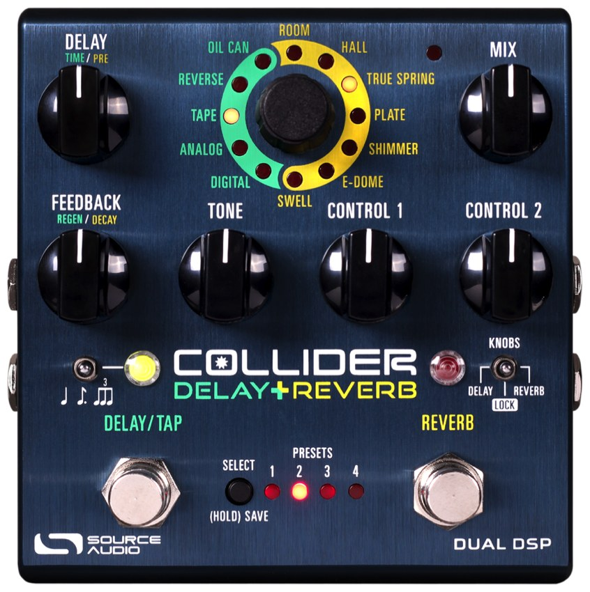
Welcome
Built from the Collider Delay+Reverb User Guide (SA263, last revised December 27, 2019 — see Version History). Three companion documents are folded in: the MIDI Implementation Guide as the MIDI Implementation table, the Control Options Guide as the External Control Options Guide table, and the Quick Start Reference Card at the end. The MIDI section also carries the Collider’s row of Source Audio’s MIDI Support chart.
Sources: User Guide · MIDI Implementation Guide · Control Options Guide · Quick Start Reference Card · MIDI Support chart
{kind=link}
Thank you for purchasing the Collider Delay+Reverb. This powerful, yet easy-to-use stereo effects pedal features 12 meticulously crafted delay and reverb engines. Each effect was handpicked from our award winning and highly regarded Nemesis Delay and Ventris Dual Reverb pedals. The Collider’s intuitive control surface makes it easy to mix-and-match any two-engine combination of delay and reverb. Plus, dual footswitches provide individual Engage/Bypass control over each effect in a two-engine combination.
The Collider offers an exceptional collection of rich, spacious tones, including realistic reproductions of vintage Analog, Tape, and Oil Can Delays, classic models of Spring and Plate Reverb, natural replications of large and small acoustic spaces, and an intriguing and highly musical selection of “unnatural” tones including Reverse Delay and Shimmer Reverb.
The pedal also features dual DSP architecture, 8 user presets (or 128 user presets with MIDI), stereo inputs and outputs, analog dry through, delay tap tempo, reverb hold, full MIDI functionality, external expression capabilities, and extra editing and signal routing options via the Neuro Desktop and Mobile App Editors.
We built the Collider Delay+Reverb for supreme sonic exploration. We cannot wait to hear where it takes you.
– The Source Audio Team
Overview
12 Hand Picked Engines – Includes vintage Spring, Plate, and Hall reverbs, natural Room sounds, and unnatural Shimmer, E-Dome, and Swell reverbs. Also includes classic Digital, Analog, and Tape delay sounds, a haunting Reverse sound, and a unique, dark, reverb-like Oil Can.
Flexible Stereo Routing – Collider is equally at home in a mono or stereo rig. The Collider Auto-Detects the Inputs and Outputs that are being used and accordingly routes every delay and reverb effect engine in Mono-to-Mono, Mono-to-Stereo, or Stereo-to-Stereo modes. It is also possible to select between series, parallel, and split stereo modes, when both engines are engaged.
Dual Processing – Features two completely independent processors. Its Dual DSP platform gives the pedal massive processing power, essentially providing two high-powered pedals in a single enclosure.
Analog Dry Through – For most configurations the incoming dry signal maintains an independent path around the effects processors (for most engines) while an effect is engaged, thereby maintaining a 100% pure dry signal without D/A conversions.
Universal Bypass – Select between true bypass, buffered bypass, or soft bypass with reverb trails. The Collider features high-quality signal relays for true bypass and transparent buffers for analog bypass.
Compact Design – The extruded anodized aluminum housing, with its slim profile and small footprint, is built for the rigors of the road.
Presets – Save your favorite sounds with the touch of a button. Save up to 8 presets recallable with the pedal’s onboard controls, plus a total of 128 presets recallable with an external MIDI controller.
Dual Delay or Reverb Control Set – The Collider’s “Unlock” feature allows you to unlock the Effect Selector knob and access both delay and reverb effects from either footswitch. This means that it is possible to use Collider as a Dual Delay or a Dual Reverb pedal.
Neuro Mobile App – The Neuro App is a free download for iOS and Android mobile devices. The App offers a powerful extension to the basic pedal functionality with the options of preset saving and publishing. Edit your presets and upload them directly to your pedal, save them in your private library, or publish and share them with the rest of the Neuro Community.
The Neuro Desktop Editor – Connect your Collider Delay+Reverb to the USB port on your Mac or Windows PC to create and save advanced presets with the Neuro Desktop’s sleek editing interface. The Neuro software is a free download for Mac or Windows based PCs. Two-way communication between the pedal and your computer also allows the Desktop Editor to see the parameter settings of every preset stored in your Collider.
Neuro Hub – The Source Audio Neuro Hub connects up to five compatible Source Audio pedals and stores the settings of multi-pedal “Scenes.” Up to 128 Scenes can be saved and recalled using the Neuro Hub alongside a standard MIDI controller. This option combines the power of a multi-effects system with the ease and flexibility of a traditional pedal board.
Full MIDI Implementation – Collider’s parameters can be accessed and controlled using MIDI messages via its 5-pin DIN Input, a Neuro Hub connection, or USB port. Use MIDI messages to engage/disengage the pedal, change presets, move parameters with a MIDI expression controller, and more. Class compliant USB-MIDI allows the Collider to work as a plug-and-play device with recording software running on Mac and Windows.
External Control – Easily configure the Collider to work with a variety of expression pedals and footswitches for various external control options.
Discover Knobs Position – Allows you to “discover” where the pedal’s knobs are set for a given preset, via the Control LED flashing when you’ve reached the correct knob position on the dial.
Connecting the Pedal
Power
To power the unit, connect a 9V DC negative-tipped power supply to the jack labeled DC 9V on the back panel. Collider needs at least 300mA of current to operate as intended. Please note that your Collider does not include a power supply.
Warning: Using an unregulated supply could damage the unit. A power supply with insufficient current levels may also cause noise or other unpredictable behavior. Please be very cautious when using a power supply and refer to the power supply requirements printed on the bottom of the Collider’s housing.
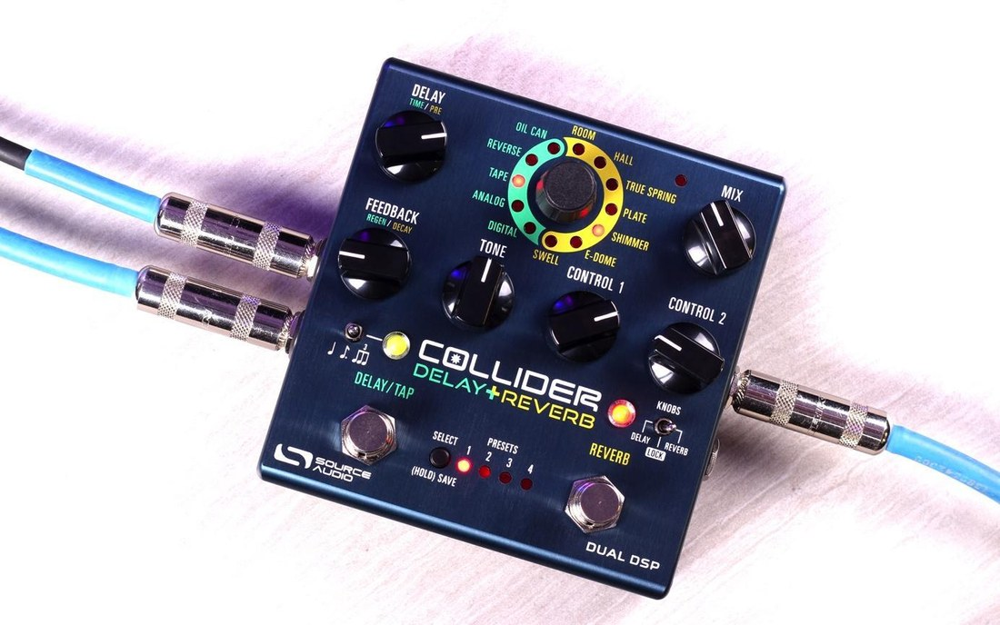
Connections
Guitar/Audio Connections
Using standard ¼” mono cables, connect your guitar, bass, or other instrument to the INPUT 1 jack and your amp (or the next audio device in the signal chain) to the OUTPUT 1 jack. If you have a second amp, connect it to OUTPUT 2.
When the power and audio connections have been made, Collider is ready for use.
Input Side Connections
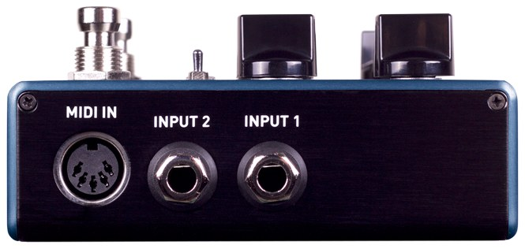
Input 1
INPUT 1 is the primary input for guitar, bass, or other instruments. It can also accept line-level inputs and will work in your amp’s effect loop. Connect it to your instrument or other audio source using a mono (TS) ¼” cable. Details about the allowed signal levels are available in the Specifications section.
Input 2
The secondary audio input for stereo sources or as the data connection to your mobile device when using the Neuro App.
- Input 2 as an Audio Input: The tip contact on INPUT 2 acts as a secondary input for guitar, bass, or other instruments. Connect your instrument (or the previous effect in the signal chain) using a mono (TS) ¼” cable. The Collider will automatically configure itself for stereo audio input. Other routing options are available using the Neuro App. For more information about stereo routing, refer to the Stereo Operation section.
- Input 2 as a Neuro App Data Input: The ring contact on INPUT 2 acts as a data connection for the Neuro Mobile App. The Neuro App sends data to the pedal using your mobile device’s headphone jack. Connect it to your mobile device using the included stereo (TRS) ⅛” to ¼” cable. It can also accept daisy-chained Neuro data from another Neuro-compatible pedal in the chain, provided that a TRS cable is used. The audio signal (if applicable) will be on the tip contact of the plug, and the Neuro App data will be on the ring contact. This allows audio and Neuro data to flow on the same cable.
MIDI Input
This is a standard 5-pin DIN connector that accepts MIDI control messages from external devices, including program change (PC) and continuous controller (CC) messages. Please email contact@sourceaudio.net regarding any questions about the Collider Delay+Reverb’s MIDI implementation.
Output Side Connections
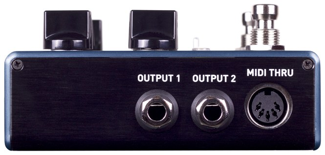
Output 1
This is the primary audio output. Connect it to your amplifier, recording interface, or the next device in your effects signal chain using a mono (TS) ¼” cable.
Output 2
OUTPUT 2 can act either as an audio output or a daisy-chain data connection for the Neuro App.
- Output 2 as an Audio Output: The tip contact on OUTPUT 2 acts as the secondary audio output. It carries an audio signal when the Collider is configured with a signal routing that uses stereo outputs. Connect it to your amplifier, recording interface, or the next device in your effects signal chain using a mono (TS) ¼” cable.
- Output 2 as a Neuro App Data Daisy-Chain Output: The ring contact on OUTPUT 2 acts as a data connection for the Neuro App, passing data from the Collider to the next Source Audio effect in your signal chain. You can daisy-chain the Neuro App data regardless of whether OUTPUT 2 is configured to output audio or not. Connect OUTPUT 2 to the next device’s Neuro App Data input (usually INPUT 2) using a stereo (TRS) ¼” cable. The audio signal (if applicable) will be on the tip contact of the plug, and the Neuro App data will be on the ring contact. This allows audio and Neuro data to flow on the same cable.
MIDI Thru
This is a standard 5-pin DIN connector that echoes MIDI messages from the MIDI INPUT jack and sends them to other devices. The Collider does not generate any of its own MIDI data, but it will copy and output any data it receives.
Power and Control Connections
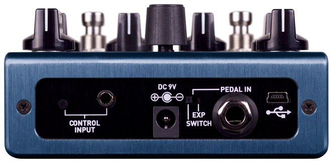
DC 9V (Power)
Please use a regulated 9V DC, center-negative power supply rated for at least 300mA (not included). Unregulated or lower-current supplies may cause noise or unpredictable performance.
USB
Connect your computer (Mac or Windows) to the Collider’s USB port (marked with the USB icon) using a standard mini USB cable. The Collider is a class compliant USB device, meaning that it does not require any custom drivers. For more information about the Collider’s USB capabilities, refer to the USB section.
Control Input
The 3.5 mm CONTROL INPUT port connects to external control devices such as the Source Audio Tap Tempo Switch, Source Audio Dual Expression Pedal, Neuro Hub, and Hot Hand Motion Controller. For more information, refer to the Expression Pedal Input, Hot Hand Input, and Neuro Hub sections.
Expression/Switch Pedal Input
The PEDAL IN jack on the back panel connects to either an external passive expression pedal or footswitch. The PEDAL IN SWITCH allows the user to select which type of external controller is being used. Set to EXP for expression control or SWITCH for footswitch control. See the External Control section for details.
Reverb Engines
The Collider includes seven onboard reverb effect engines, carefully selected from the Ventris Dual Reverb. Because of the wide tonal possibilities of each reverb engine in the Collider Delay+Reverb, it was necessary to arm the pedal with two variable knobs labeled CONTROL 1 and CONTROL 2. When a new reverb engine is selected, two engine specific parameters are automatically assigned to the CONTROL knobs.
Below are descriptions of each reverb engine and how the CONTROL knobs are configured respectively.
Room
The ROOM engines capture the ambient reverberations of a real acoustic space. In contrast with the E-DOME engine (which offers a massive, arena-sized reverb) the ROOM engine can summon a variety of room sizes from a warm and intimate household room to a larger theatre sized space. Use the FEEDBACK (decay), DELAY (pre-delay), and MIX knobs to alter the size and feel of your room.
CONTROL 1: Bass – Adjusts the level of the low-end frequencies on the wet signal. Turn the knob counterclockwise for a lighter reverb or clockwise for thicker, more bass-heavy sound.
CONTROL 2: Mod Depth – Adds a pitch modulation to the wet signal. Turn the knob fully counterclockwise for zero modulation and clockwise to gradually increase the pitch depth.
Hall
Patterned after the lush sounds of studio rack units from the 80s, the HALL engine is distinguished by its highly diffuse tones and glorious blooming characteristic. The Source Audio engineering team invested massive research time in perfectly capturing the complex sounds of these powerful effects units. It should be noted that while we place this grand effect engine among the classic reverbs, it has little resemblance to reverberations found in the natural or analog world, rather the HALL replicates the extravagant wash of sound popular during the first wave of ambient music recordings.
CONTROL 1: Bass – See the description in the ROOM engine section.
CONTROL 2: Hall Size – Select between 5 different hall sizes. Turn the knob counterclockwise for smaller, tighter hall sounds and clockwise for grander reverberations. Please note that this knob does not gradually increase the size of the hall, rather the knob is split into five regions. As you turn the knob you may hear the transition points where a new hall size is engaged.
True Spring
Source Audio’s Chief Scientist, Bob Chidlaw, worked long and hard to perfectly capture the sweet idiosyncrasies of a vintage spring reverb tank. The result is an exceptionally realistic effect with the unmistakable “drip” heard in vintage spring reverb equipped amplifiers.
CONTROL 1: Bass – Find the description in the ROOM engine section.
CONTROL 2: Spring Length – Selects between three different virtual spring lengths. The longer the springs in a reverb tank the more distinguishable the “echo” effect becomes as the incoming signal travels back and forth across the length of the springs. Please note that this knob does not gradually increase the size of the springs, rather the knob is split into three regions. As you turn the knob you may hear the transition points when a new spring length is engaged.
Plate
This authentic sounding reverb engine is a spot-on simulation of the highly diffuse effect synonymous with vintage plate reverb units of the 50s and 60s. Like the True Spring engine, Bob Chidlaw was relentless in crafting the perfect emulation of this beautiful and distinct sound. The critical component of a plate reverb is a large plate of suspended sheet metal. Blasting audio into the face of the sheet metal creates the beautifully lush and resonant tones found in countless classic recordings.
CONTROL 1: Bass – Find the description in the ROOM engine section.
CONTROL 2: Plate Size – Selects between three different plate sizes: Small, Medium and Large. In general, as the plate size gets larger the reverberations will sustain longer and develop varying characteristics in the decay. Please note that this knob does not gradually increase the size of the plate, rather the knob is split into three regions. As you turn the knob you may hear the transition points when a new plate size is engaged.
Shimmer
This pitch shifting reverb engine mixes traditional room sounds with octave-up reflections for an angelic reverb effect.
CONTROL 1: Normal/Shimmer Crossfade – Controls the mix ratio between the normal reverb effect and the pitch shifting reverb reflections. Turn the knob clockwise to gradually increase the pitch shifting reverb and decrease the normal reverb in the wet mix.
CONTROL 2: Shimmer Regeneration – Increases the amount of Shimmer signal that is fed back into the reverb processor. To the listener, the Shimmer effect becomes more pronounced as this knob is turned clockwise.
E-Dome
The cavernous E-DOME (a.k.a. “Enormo-Dome”) produces long, lush reverb trails that linger for days. Invoke the sound of massive, arena settings with the Ventris Reverb’s largest room simulation. This one is huuuuge, spacious, cloud-like and ambient.
CONTROL 1: Bass – See the description in the ROOM engine section.
CONTROL 2: Mod Depth – See the description in the ROOM engine section.
Swell
Creates smooth, amorphous volume swells. This engine applies a volume swell effect to your instrument’s dry signal, which is then fed into the reverb effect for super-long and ambient clouds of sound. This effect is great for creating soft, atmospheric chord pads. The Swell engine also sounds fantastic when it is placed first in a dual reverb preset set to Cascade Mode (this can be achieved by “unlocking” the Reverb engines on the Delay side of the pedal).
CONTROL 1: Swell Sensitivity – Controls the sensitivity of the envelope follower. Turn this knob down if you have low impedance pickups or you want to dig in with some hard picking, turn it up for high impedance pickups or soft picking.
CONTROL 2: Swell Time – Adjust the speed of the volume swell. Turn the control counterclockwise for quicker swells and clockwise for a longer, smooth effect.
Delay Engines
The Collider includes five onboard delay effect engines, hand-picked from the Nemesis Delay. Because of the wide tonal possibilities of each delay engine in the Collider Delay+Reverb, it was necessary to arm the pedal with two variable knobs labeled CONTROL 1 and CONTROL 2. When a new delay engine is selected, two engine specific parameters are automatically assigned to the CONTROL knobs.
Below are descriptions of each delay engine and how the CONTROL knobs are configured respectively.
Digital
Pristine digital repeats. Turning the TONE knob to the right of 12 o’clock adds low cut (high pass) filtering and creates a thinner delay sound. Turning the TONE knob to the left of 12 o’clock adds high cut (low pass) filtering and creates a warmer delay sound. Setting the TONE knob to 12 o’clock produces a pure, unfiltered delay.
Time Knob Range: 10 milliseconds to 2.6 seconds
CONTROL 1: Modulation Depth – Controls the depth of the modulation.
CONTROL 2: Modulation Rate – Controls the speed of the modulation. Turn all the way to
the left for no modulation.
Analog
This delay engine reproduces the characteristic dark sound of bucket brigade analog delays. Traditional analog bucket brigade delays can be either resonant or warm. This engine focuses on warmth and was inspired in part by the classic Memory Man© delay.
Time Knob Range: 40 milliseconds to 1.2 seconds
CONTROL 1: Modulation Depth – Controls the depth of the modulation.
CONTROL 2: Modulation Rate – Controls the speed of the modulation. Turn all the way to
the left for no modulation.
Tape
A detailed re-creation of classic moving-head tape delays. Repeats are bandwidth limited and have artifacts characteristic of vintage tape delay units, such as filtering, preamp saturation, noise, wow and flutter.
Time Knob Range: 20 milliseconds to 1.2 seconds
CONTROL 1: Modulation Depth – Controls the depth of the modulation.
CONTROL 2: Modulation Rate – Controls the speed of the modulation. Turn all the way to
the left for no modulation.
Reverse
A classic reverse tape sound that became popular in 60s psychedelic rock. The Collider can create several overlapping reversed delays that fade in and fade out regularly to create a pulsing tremolo effect. The TONE knob mixes in additional delay taps to add more layering to the reverse sound.
Time Knob Range: 200 milliseconds to 2.6 seconds
TONE: Mixes in an additional Reverse Delay tap.
CONTROL 1: Modulation Depth – Controls the depth of the modulation.
CONTROL 2: Modulation Rate – Controls the speed of the modulation. Turn all the way to
the left for no modulation.
Oil Can
This is a dark, jangly, warbling and distorted delay inspired by old oil can designs. It previously appeared in the “Extended Delay Engines” on the Nemesis, but we felt it deserved a spot on the face of the Collider.
Time Knob Range: 20 milliseconds to 800 milliseconds
CONTROL 1: Modulation Depth – Controls the depth of the modulation.
CONTROL 2: Modulation Rate – Controls the speed of the modulation. Turn all the way to
the left for no modulation.
Controls
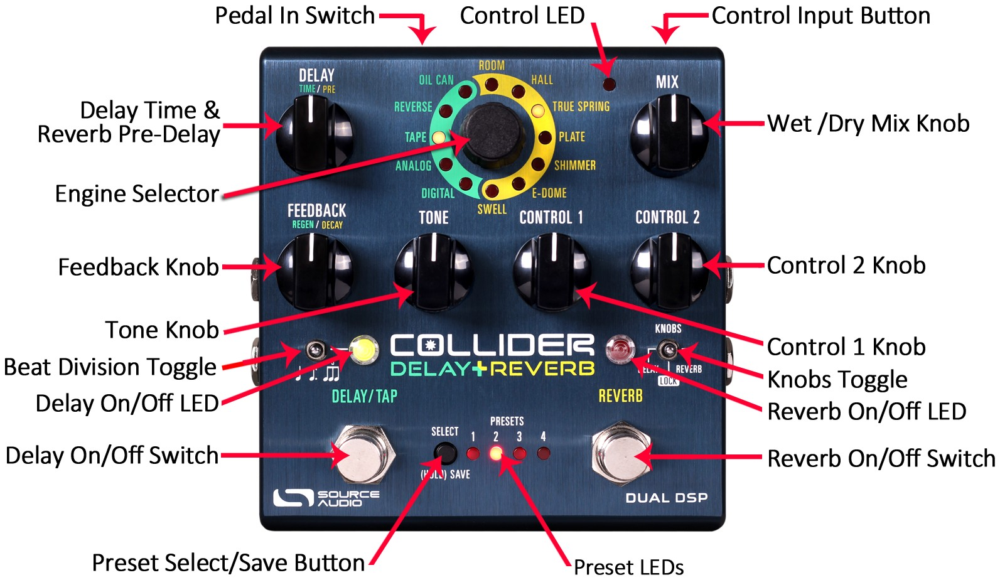
KNOBS Toggle Switch
This is the key to the whole operation. Flip the switch to the DELAY side to change Delay engines and parameters with the knobs. Flip it to the REVERB side to alter Reverb settings. Flip it to the center “LOCK” position to lock all controls in place, preventing accidental bumps in a live setting.
DELAY Knob (Time/Pre)
REVERB (Pre-Delay): Sets the Pre-Delay, meaning the amount of time between the dry signal and the initial reverb reflections. As the DELAY knob is turned clockwise the pre-delay time increases creating a sound similar to a natural echo or “slapback” effect.
DELAY (Time): Adjust the delay time, or speed of the repeats. Turn counter-clockwise for short, “slapback” style repeats, or clockwise for long, ambient repeats.
MIX Knob
The MIX knob is primarily used to set the ratio between your wet and dry signals. This knob has a slightly different function depending on whether you are in Cascade Mode or Parallel Mode. Please note that Kill Dry Mode is also available as a global option (see Kill Dry Mode in the Neuro Hardware Options section of this manual).
Cascade Mode
Sets the relative levels of the wet and dry signals. Fully counterclockwise is 100% dry, fully clockwise is 100% wet. Roughly 3 o’clock on the MIX knob is where a 50/50 split between wet and dry occurs.
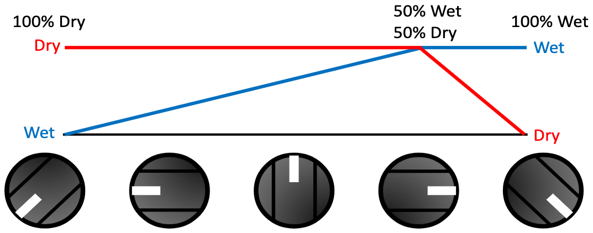
Parallel Mode
When the Collider is set to Parallel Mode, the MIX knob controls the level of the wet signal only, with fully counterclockwise being no wet signal, and fully clockwise being a 50/50 wet/dry mix. This control works independently with each effect.
Alternate MIX Knob Function
On the Collider, the MIX knob has a secondary, or alternate (ALT) function, which varies depending on whether you’re in Cascade or Parallel Mode. To access the ALT MIX knob function, hold the CONTROL INPUT button down while turning the MIX knob.
Cascade Mode
When the Collider is set to Cascade Mode, the ALT MIX knob controls the overall level of the Output signal of either engine, with fully counterclockwise being zero output, and fully clockwise being +6 dB of output. 12 o’clock on this knob is “unity”.
Parallel Mode
When the Collider is set to Parallel Mode, the ALT MIX knob controls the level of the analog dry through signal, with fully counterclockwise being no dry signal, and fully clockwise being “unity” analog dry level. Since you are only manipulating a single dry signal, this control functions the same no matter which engine you are currently editing.
FEEDBACK Knob (Regeneration/Decay)
REVERB (Decay): Sets the sustain time of the reverb trail. Turn the FEEDBACK knob counter-clockwise for a quicker decay and clockwise for a slower decay and longer reverb trail.
DELAY (Regeneration): Controls the amount of delay repeats. Turn the knob counterclockwise for fewer repeats and clockwise for more repeats. Turning the FEEDBACK knob all the way to the left will produce a single repeat (or two repeats in stereo). For most of the engines (REVERSE being the exception) turning the knob all the way to the right puts the effect into self-oscillation. Setting the knob to somewhere around 3 o’clock produces semi-constant repeats, which will degrade over time.
TONE Knob
Controls the amount of high frequency damping applied to the wet signal. Turn the knob clockwise for a brighter delay/reverb trail and counterclockwise for a darker delay/reverb. With the REVERSE delay engine, the TONE knob affects the number of voices. Turn clockwise for more voices added to your signal, or counterclockwise for fewer.
CONTROL 1 and CONTROL 2
Because of the wide tonal possibilities of each engine in the Collider Delay+Reverb, it was necessary to arm the pedal with two “wildcard” knobs labeled CONTROL 1 and CONTROL 2. In DELAY mode, the mapping is simple: CONTROL 1 is Modulation Depth, and CONTROL 2 is Modulation Rate.
In REVERB mode, the function of the CONTROL knobs varies depending on the active reverb engine. Details on the function of each knob are available in the Reverb Engines section of this manual.
Effect Engine Selector Encoder & LEDs
Selects the active Delay and Reverb engines and sets the function of the CONTROL knobs.
The REVERB ENGINE LEDS that encircle the yellow side of the ENGINE SELECTOR indicate which REVERB engine is currently active.
The DELAY ENGINE LEDS that encircle the green side of the ENGINE SELECTOR indicate which DELAY engine is currently active.
Unlocking the Effect Engine Selector
It is also possible to “unlock” the REVERB and DELAY engines, by both a hardware shortcut and via the UNLOCK button on the Neuro Desktop Editor.
“Unlocking” the Engine Selector gives you the option of simultaneously running two delay engines or two reverb engines, as opposed to being limited to one delay and one reverb. To unlock, press down the CONTROL INPUT button and turn the Engine Selector, this allows you to continue turning through effect engines and assign Reverb engines to the Delay footswitch and Delay engines to the Reverb footswitch.
The natural series order of effects in the Collider is delay before reverb, but the Unlock function also allows you to switch this order.
DELAY/TAP Footswitch
Enables or bypasses the delay effect. By default the Collider uses a True/Hard Bypass Mode, but it is also possible to switch to a Buffered Bypass (see the Universal Bypass section for more information) or Trails Mode (Soft) Bypass (see the Trails Mode section).
The DELAY/TAP Footswitch also serves a second function. When the effect is engaged, lightly tapping the DELAY/TAP switch at least three consecutive times in a desired tempo will engage Tap Tempo mode, allowing you to control the rate of your delay on the fly. This feature can also be disabled in Hardware Options by unchecking “Enable Tap Tempo on Delay/Tap Footswitch”. It is important to note that because of the dual functionality of the DELAY/TAP switch, you must press and hold the switch for a split second to bypass the delay. It is also possible with the Neuro Editor to reset the amount of hold-down time necessary to bypass the delay, which has an effect on the sensitivity of the tap tempo.
The DELAY/TAP switch can also be used to scroll through the user presets. While the delay is bypassed, press and hold the DELAY/TAP switch to scroll downward through user presets.
Tap Beat Division Toggle Switch
Use this switch to select the beat division of your tapped tempo. Quarter note will give you exactly what you tapped in. Dotted Eighth will divide your tapped beats into dotted eighth notes for the classic “Edge” effect, and Triplets will divide your tapped beats into triplets. Alternate beat division options are available in the Neuro Mobile App and Neuro Desktop Editors.
REVERB Footswitch
Enables or bypasses the reverb effect. By default the Collider uses a True/Hard Bypass Mode, but it is also possible to switch to a Buffered Bypass (see the Universal Bypass section for more information) or Trails Mode Bypass (see the Trails Mode section).
The REVERB Footswitch also serves a second function. When the effect is engaged, pressing and holding the REVERB footswitch will engage Reverb HOLD Mode, freezing your reverb tail indefinitely and allowing you to play on top of the sustained reverb.
The REVERB switch can also be used to scroll through the user presets. While the reverb is bypassed, press and hold the REVERB switch to scroll upward through user presets.
Trails Mode
By default, the Collider is set to Hard Bypass Mode, which means that the delay/reverb trails will stop immediately upon bypassing the pedal. Trails Mode (also known as “Soft Bypass”) is an optional bypass mode that allows the delay/reverb trails to fade out naturally after the effect has been bypassed.
Trails mode can be enabled from the Hardware Options menu of the Neuro Mobile App or Desktop Editor. It is also possible to put the pedal into Trails mode by pressing the DELAY/TAP FOOTSWITCH while holding the CONTROL INPUT BUTTON. This will toggle between enabling and disabling trails mode. The small CONTROL INPUT LED on the right corner of the pedal will blink one time when the pedal is in Normal Bypass mode and twice when the pedal is in Trails mode. Trails Mode is a global setting and is NOT saved per preset.
Delay On/Off LED
The ON/OFF LED above the DELAY/TAP FOOTSWITCH indicates if the delay effect is active (lit green) or bypassed (not lit). This LED also monitors the rate of Tap Tempo with alternating red and green blinks.
Reverb On/Off LED
The ON/OFF LED above the REVERB FOOTSWITCH indicates if the reverb effect is active (lit red) or bypassed (not lit). This LED also blinks while using the Reverb Hold function.
Reverb Hold Function with Dual Processor Architecture
One of the great advantages of the Collider Delay+Reverb’s dual processor architecture is the opportunity it offers to the Hold function. The Hold function sustains any Reverb engine’s wet signal indefinitely while pressing down on the REVERB footswitch. As with most effects units that offer some type of a Hold (a.k.a. “Freeze”) function, it is also possible to continue playing over the top of the sustained reverb tail. Collider provides the exciting new functionality of being able to play with delay engaged while holding the reverb trail…all in one pedal.
Control Input Button
This small button located at the top of the pedal is used when configuring external control. It also plays a role in many of the Hardware Shortcuts. See the External Control section and the Hardware Shortcuts section for more details.
External Control LED
The small LED located to the left of the MIX KNOB is the CONTROL/ACTIVITY LED. When lit, it indicates that external control mode (expression or MIDI) is active or that incoming data is being received via MIDI or a Neuro connection. For more information, see the External Control section.
Hardware Shortcuts
The Collider comes with many “hidden” controls and features that will help you calibrate the pedal to your specific needs. There are two types of shortcuts: “Normal” shortcuts that are done without changing the power of the pedal, and “Power-Up” shortcuts that are options set by depowering and repowering the pedal.
Normal Mode Shortcuts
Trails Mode: To toggle Trails Mode for your delay/reverb, hold the CONTROL INPUT button on the top side of the pedal, and press the DELAY/TAP switch. The Control Indicator LED will flash once for Trails Mode OFF, and twice for Trails Mode ON.
Preset Extension Mode: To toggle Preset Extension Mode, which doubles the amount of available preset slots from 4 to 8, hold the CONTROL INPUT button on the top side of the pedal, and press the PRESET SELECT Button.
Adjust Delay Time Division: To toggle between stereo delay time divisions, hold the CONTROL INPUT button while moving the DELAY knob. There are four divisions spread out evenly across the knob.
Hidden Output Level Knob: To access the hidden “Output Level” knob, hold the CONTROL INPUT button while moving the MIX knob. This will control the overall output of the Collider. Unity gain is at 12 o’clock. This combination is also used to control the level of the dry signal when the effects are in Parallel Mode.
Cascade/Parallel Mode Toggle: To toggle between Cascade and Parallel Mode on the pedal, hold the CONTROL INPUT button down while flipping the “KNOBS” switch to the center “LOCK” position. If your switch is already in this position, flip it to either side and then back to the center while holding the CONTROL INPUT button.
Power-Up Shortcuts
Factory Reset: To perform a factory reset on the Collider, unplug the power cable. Then, press + hold the REVERB Footswitch while plugging the power supply back in.
Disable Internal Tap: To disable the integrated Tap Tempo feature located on the DELAY/TAP Footswitch, unplug the power cable. Then, press + hold the DELAY/TAP Footswitch while plugging the power supply back in. The DELAY/TAP LED Indicator will flash once for disabled, twice for enabled.
Control Input Jack Assign Options: To toggle between Control Input Jack assignments, unplug the power cable. Then, press + hold the CONTROL INPUT Button while plugging the power supply back in. Keep holding the CONTROL INPUT Button to cycle through the options. The Control LED Indicator will flash once for Option 1 (Neuro Hub/Expression), twice for Option 2 (Preset Increment), three times for Option 3 (Preset Decrement), and four times for Option 4 (Tap). Release the CONTROL INPUT Button to select one of these four options.
Preset Select/(Hold) Save Button and LEDs
Press the SELECT button to scroll through and select saved user presets. The four PRESET LEDS next to the PRESET BUTTON indicate which preset is active for presets 1 through 4. If a preset has been modified, the corresponding PRESET LED will blink slowly. To save a preset, press and hold this button – the associated preset LED will blink for a few seconds. When the LED stops blinking, the updated preset will be saved to the current preset position.
Preset Extension Mode: Allows for easy access to an additional 4 presets for a total of 8 onboard presets. To enable Preset Extension Mode, go to the Hardware Options section of the Neuro Mobile or Desktop Editor (see Neuro Hardware Options) and select the appropriate option. The illumination patterns of the Preset Select LEDs indicate which Preset has been selected (see the figure below).
Preset Extension Mode can also be enabled as a hardware shortcut on the Collider itself. To Enable Preset Extension Mode, hold down the CONTROL INPUT button + press the PRESET SELECT button.
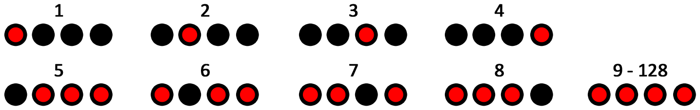
Note: when using a MIDI controller to select a preset outside of the normal bank (presets 1 to 4) or extended bank (presets 5 to 8), then all 4 PRESET LEDS will be lit, indicating that a preset in the range between 9 and 128 is active. For details on preset editing and saving, see the next section.
Preset Storage and Recall
User Presets store all user editable parameters. This includes the knob positions, current effect engines, routing options, external control, and the full list of Neuro/MIDI accessible parameters. Included in every preset are settings for either position of the KNOBS Switch (Delay or Reverb). After a preset is recalled, you can always tweak it in a performance situation by turning a knob. The knob parameter will then “jump” to the knob position as the knob is moved.
Recalling Presets
The first 4 User Presets (or 8 in Preset Extension Mode) are accessible via the onboard hardware or with an external footswitch in the following ways:
- Click the SELECT button to cycle through the hardware user presets. This function works whether the pedal is engaged or bypassed.
- When the effect is bypassed, press and hold down the REVERB footswitch to cycle forward through presets. Release when you’ve arrived at your desired slot. Press and hold the DELAY/TAP switch to cycle backward through presets. If Reverb is engaged you will not be able to cycle forward through presets, and vice versa.
- Connect an external footswitch to the PEDAL IN jack and select SWITCH mode (located next to the PEDAL IN jack) to scroll upward through presets. Please note that the Collider’s default external switch assignment is Tap Tempo, but it can be easily changed to Increment or Decrement Preset in the Hardware Options section of the Neuro Desktop or Mobile App Editors. These control assignments are global.
Recalling MIDI Presets
All 128 available User Presets are accessible with an external MIDI controller. MIDI controllers can be connected via either the 5-Pin DIN (MIDI IN) jack on the side of the pedal, the USB port at the top of the pedal, or through a Neuro Hub, which connects to the CONTROL INPUT at the top of the pedal. All 128 User Presets can be recalled with the corresponding MIDI program change (PC) messages.
Note: When recalling presets via MIDI PC messages, you may wish to queue up your preset with effect bypassed. To do this, simply engage the preset, bypass it with both footswitches, then re-save the preset normally. When recalled, the pedal will load the saved user settings, but the effects will be bypassed until you engage either engine.
Copying a Preset to a New Location Using the Select/(Hold) Save Button
- Select the preset you would like to copy by pressing the SELECT Button until the corresponding PRESET LED is lit.
- Press and hold the SELECT Button for one second until the corresponding PRESET LED begins blinking rapidly. Quickly release the SELECT Button. The PRESET LED should continue to blink rapidly. This indicates that the Collider is in copy mode.
- Tap the SELECT Button to increment the preset. The corresponding PRESET LED should continue to blink rapidly. Tap the SELECT Button again until the desired copy destination is selected.
- Press and hold the SELECT Button until the PRESET LED blinks slowly and then turns solid. This indicates that the preset has been saved to the new location. The original location will not be changed or overwritten.
Copying a Preset to a New Location Using an External MIDI Controller
- Select the preset you would like to copy by sending a MIDI program change message to the Collider.
- Press and hold the SELECT Button for one second until the corresponding PRESET LED begins blinking rapidly. Quickly release the SELECT Button. The PRESET LED(S) should continue to blink rapidly. This indicates that the Collider is in copy mode.
- Send a desired MIDI Program Change number to indicate the desired copy destination for the preset.
- PRESET LED will blink fast and then turn solid. This indicates that the preset has been saved to the new location.
Copying a Preset to a New Location Using the Neuro App
Using the BURN command in Neuro Mobile or Desktop Editors, it is possible to copy presets to any location in memory.
Clearing all Presets
All 128 User Presets can be erased using the Factory Reset procedure. Warning: The Factory Reset procedure resets the entire pedal back to the state in which it was originally shipped – this includes all global settings and User Presets. A Factory Reset will not erase any firmware updates.
Universal Bypass
Most effect pedals offer either true bypass or buffered bypass. The Collider contains two separate circuits for bypass mode, allowing you to choose the method you prefer. The true bypass path uses signal relays, which are electromechanical switches. This provides an ultra-low resistance path from the input jacks to the output jacks, which is effectively the same as a wire. The buffered bypass path uses extremely low noise buffers, which provide a very low output impedance and are effective for driving long cables or long chains of effects following the Collider’s audio output.
Out of the box, the Collider operates in true bypass mode. In order to switch to buffered bypass mode, edit the Collider Delay+Reverb’s global settings using the Neuro Desktop or Mobile App.
We recommend you choose between the active analog bypass (a.k.a. buffered bypass) and relay-based true bypass based on what is needed in your signal chain. Ideally, on a larger pedalboard the first pedal in a signal chain is a buffered input followed by true bypass in the rest of the signal chain.
Both bypass methods have pros and cons associated with them. Buffered bypass provides consistent input impedance so that if the source is susceptible to variations in input impedance (similar to a guitar pickup), there won’t be a noticeable change in tone. True bypass has the benefit of providing a dedicated hardwired bypass signal path. The Collider features small-signal relays for true bypass switching that offer reduced pops and clicks compared to the traditional true bypass switching method using a mechanical switch.
When using Trails Mode, a function called “soft bypass” is used in order to maintain the reverb trails after the effect has been bypassed. Trails Mode sends the audio through the DSP at all times so the Collider must remain in the buffered bypass path. Select the Reverb Trails Mode option in the Hardware Options page of the Neuro Desktop or Mobile App to put the Collider into Trails Mode.
Stereo Operation & Signal Routing
The Collider Delay+Reverb creates dramatic mono or stereo effects via its stereo Input and Output jacks. By default, the Collider auto-detects the cables connected to INPUTS and OUTPUTS 1 & 2 and engages the appropriate Routing Mode. Stereo Routing can also be performed manually with the Neuro Editors: select between “Mono In, Stereo Out” or “Stereo In, Stereo Out.”
Signal Path Options
Cascade Mode
The Collider Delay+Reverb’s standard signal path is Cascade Mode, or A -> B. This means that when your guitar signal hits the pedal, it is processed first by Delay, then Reverb, then goes outbound. This is the same as running a delay pedal before a reverb pedal in your pedal chain. In Stereo Out, Cascade Mode always routes A -> B (the Delay side before the Reverb side) through both outputs.
PLEASE NOTE: If you’d like to run your Reverb effect before your Delay effect, this is possible in Cascade Mode. Use the “Unlock” feature on the Delay side to select a Reverb engine, then use it again on the Reverb side to select a Delay engine.
Parallel Mode
The other routing option for signal path is Parallel Mode, or A + B. In Parallel Mode, when your guitar signal hits the pedal, it is split, and processed by Delay and Reverb at the same time, then mixed together. This is effectively running a delay effect and a reverb effect at the same time, similar to the vintage analog Space Echo unit. In Mono Out, the signal is summed, and both effects are heard at the same time. In Stereo Out, the default routing is that effects A+B are combined and sent to each output.
Split Stereo (Left=A, Right=B)
In Parallel Mode, it is possible to split your signal so that engine A (Delay) and engine B (Reverb) are sent to separate outputs. To achieve this, select the Split Stereo (Left=A, Right=B) option in the Neuro Editors.
Auto Routing and Default Modes
By default, the Collider detects what has been plugged into its inputs and outputs and sets the routing mode automatically. The table below summarizes each Auto Routing Mode and its corresponding cable connections.
| INPUT 1 | INPUT 2 | OUTPUT 1 | OUTPUT 2 | Resulting Auto Routing Mode |
|---|---|---|---|---|
| Connected | Connected | Mono in, Mono Out, Cascade | ||
| Connected | Connected | Connected | Stereo in, Wet Stereo Out, Mono Dry, Cascade | |
| Connected | Connected | Connected | Mono in, Stereo Out, Cascade | |
| Connected | Connected | Connected | Connected | Stereo in, Stereo Out, Cascade |
| SPLIT | STEREO | SELECTED | ||
| Connected | Connected | Connected | Connected | Stereo in, 1=Delay, 2=Reverb |
| Connected | Connected | Connected | Mono in, 1=Delay, 2=Reverb |
Warning: If you connect the Neuro App cable from your mobile device to INPUT 2, the Collider will detect it as an audio input and adopt one of the Stereo In Modes, which might create additional noise and affect the stereo signal. This is especially true when the Neuro App cable is not connected to the phone. You can override this action by going into the app and selecting the Mono In routing mode that you want. If you want to connect a stereo input AND the Neuro App cable into INPUT 2, use a TRS (Tip, Ring, Sleeve) stereo splitter and make sure that the Neuro signal is on the Ring and the instrument signal is on the Tip (the Sleeve acts as the ground).
Auto Routing Modes
There are four routing modes available when the Collider is in its default Auto Detect mode. See detailed descriptions of each Auto Detect mode in the sections below.
Mono In, Mono Out
This is the most common use case. Plugging the incoming signal into Input 1 with Output 1 connected to an amp (or the next device in the signal chain) produces a standard mono signal. Dual processing effects are also mixed down a single output.
- I/O Config = Mono In, Mono Out
- State = Delay ON
- Mode = Parallel or Cascade
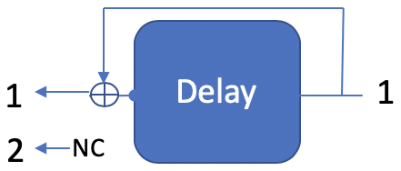
- I/O Config = Mono In, Mono Out
- State = Reverb ON
- Mode = Parallel or Cascade
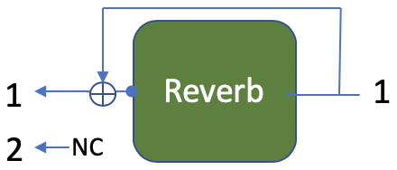
- I/O Config = Mono In, Mono Out
- State = Reverb ON, Delay ON
- Mode = Parallel
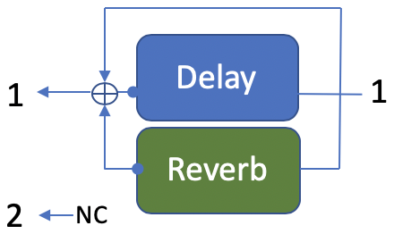
- I/O Config = Mono In, Mono Out
- State = Reverb ON, Delay ON
- Mode = Cascade
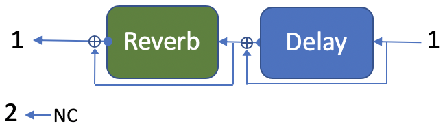
Mono In, Stereo Out
This is a very common use case that allows you to create some nice stereo imaging from a single mono instrument input.
- I/O Config = Mono In, Stereo Out
- State = Delay ON
- Mode = Parallel or Cascade
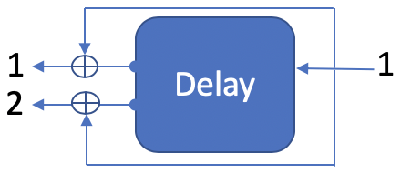
- I/O Config = Mono In, Stereo Out
- State = Reverb ON
- Mode = Parallel or Cascade
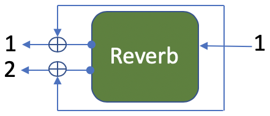
- I/O Config = Mono In, Stereo Out
- State = Delay ON, Reverb ON
- Mode = Parallel
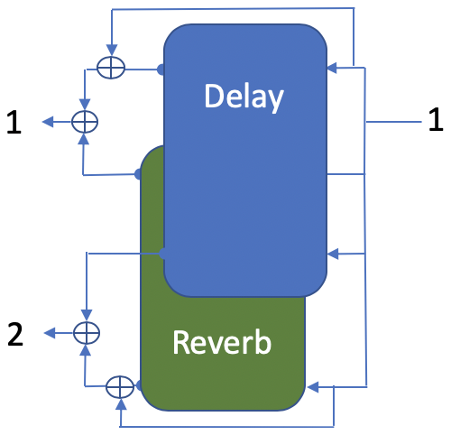
- I/O Config = Mono In, Stereo Out
- State = Reverb ON, Delay ON
- Mode = Cascade
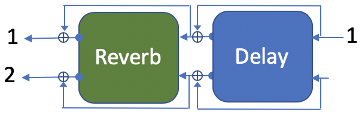
Stereo In, Stereo Out
This mode should be your default selection for Stereo In, Stereo Out applications. Most effective stereo reverb processing is performed with information from both input channels, so the modes in this section should not be considered as completely independent audio channels. If you want channel independence, set the Routing Option to “Parallel Delay/Reverb” and choose the “Split Stereo (Left=A, Right=B)” option.
- I/O Config = Stereo In, Stereo Out
- State = Delay ON
- Mode = Parallel or Cascade
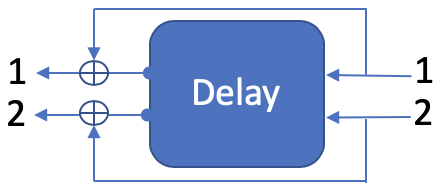
- I/O Config = Stereo In, Stereo Out
- State = Reverb ON
- Mode = Parallel or Cascade
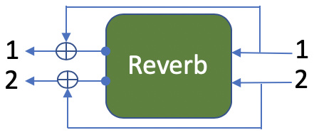
- I/O Config = Stereo In, Stereo Out
- State = Delay ON, Reverb ON
- Mode = Parallel
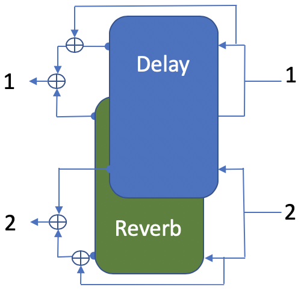
- I/O Config = Stereo In, Stereo Out
- State = Delay ON, Reverb ON
- Mode = Cascade
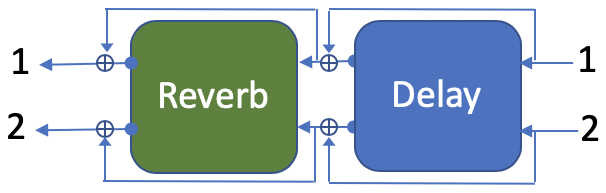
Stereo In, Mono Out
This mode allows you to plug in to both inputs, but only Output 1. This combines your wet/dry mix of Input 1 with your wet signal from Input 2.
- I/O Config = Stereo In, Mono Out
- State = Delay ON
- Mode = Parallel or Cascade
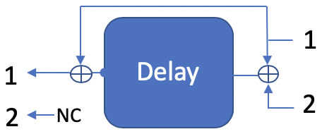
- I/O Config = Stereo In, Mono Out
- State = Reverb ON
- Mode = Parallel or Cascade
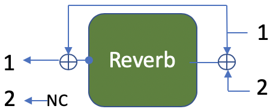
- I/O Config = Stereo In, Mono Out
- State = Reverb ON, Delay ON
- Mode = Parallel
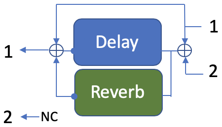
- I/O Config = Stereo In, Mono Out
- State = Reverb ON, Delay ON
- Mode = Cascade
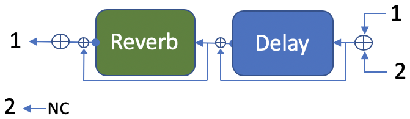
Split Stereo Modes
An additional option is available when using the Collider in Parallel Mode. In the Routing Options block of the Neuro Editors there is a button labeled “Split Stereo (Left=A, Right=B).” This option provides independent processing, meaning you can apply only delay to Input and Output 1 and only Reverb to Input and Output 2. See detailed descriptions of the Split Stereo options in the section below.
Note: Using a Swell Reverb engine in Split Stereo mode will kill the dry signal on the Delay side as well due to the architecture of the Swell engine.
Mono In, Stereo Out (Split Stereo)
This mode is used when routing a single mono signal to Split Stereo (Left=A, Right=B).
- I/O Config = Mono In, Stereo Out
- State = Delay ON
- Mode = Split Stereo
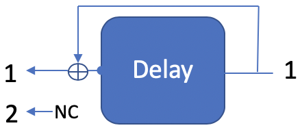
- I/O Config = Mono In, Stereo Out
- State = Reverb ON
- Mode = Split Stereo
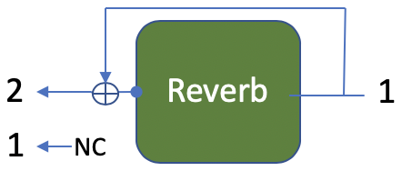
- I/O Config = Mono In, Stereo Out
- State = Reverb ON, Delay ON
- Mode = Split Stereo
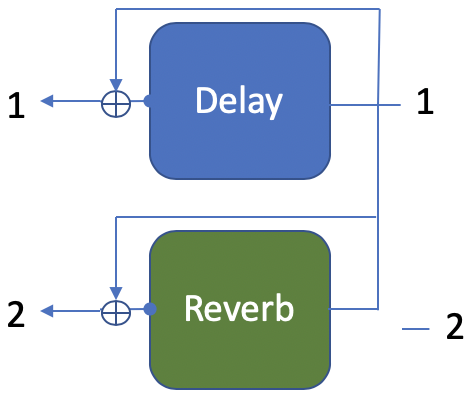
Stereo In, Stereo Out (Split Stereo)
This mode is used when routing stereo input signals to Split Stereo (Left=A, Right=B).
- I/O Config = Stereo In, Stereo Out
- State = Delay ON
- Mode = Split Stereo
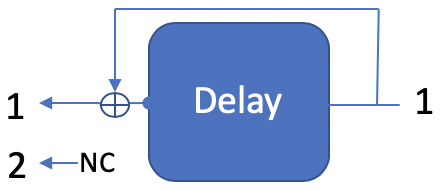
- I/O Config = Stereo In, Stereo Out
- State = Reverb ON
- Mode = Split Stereo
- I/O Config = Stereo In, Independent Stereo Out
- State = Reverb ON, Delay ON
- Mode = Split Stereo
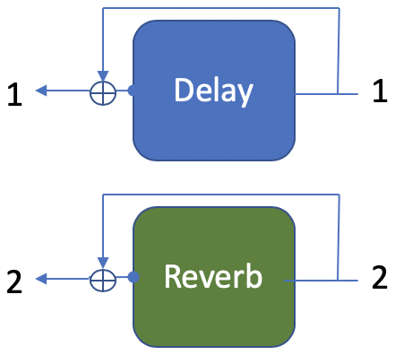
External Control
Plug an expression pedal, an external footswitch, the Source Audio Tap Tempo Switch, or the Source Audio Hot Hand 3 Universal Wireless Controller into the Collider Delay+Reverb’s CONTROL INPUT or PEDAL IN jack and access an array of external functionality and expression control.
External Switches
External switches can be used for several different control options. They provide an easy way to remotely step through presets, input a tap tempo signal, and more. The Collider is compatible with most passive single or dual external footswitches. The Collider is also compatible with the Source Audio Tap Tempo Switch, which can be purchased directly from the Source Audio online store: www.sourceaudiostore.net
External Switches (¼” TRS Connection)
Use an external switch to access an assortment of useful control options. Connect a passive single or dual footswitch to the ¼” PEDAL IN jack on the top of the pedal and set the PEDAL IN switch (located next to the PEDAL IN jack) to the SWITCH setting. If using a single switch, connect using a regular mono (TS) cable. If using a dual switch use a stereo (TRS) cable. By default, the TIP signal is used to Tap Tempo and the RING signal is used to increment the current preset.
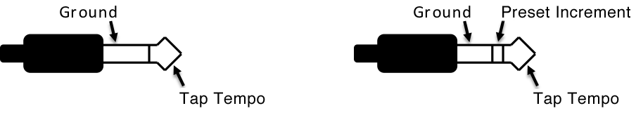
With the Neuro Desktop Editor, it is also possible to reassign control functions to an external switch. Go to the Neuro Desktop Hardware Options section for instructions on assigning alternate control options to an external dual or single external switch.
External Switches (⅛” TRRS Connection)
The Source Audio Tap Tempo footswitch can also be connected to the CONTROL INPUT jack using a 3.5mm (⅛ inch) cable. By default the CONTROL INPUT jack is assigned to Neuro Hub or External Expression Control. If you wish to change the function of this connection, it can be done with the “Control Input Function” dropdown menu in the Hardware Options section of the Neuro Desktop Editor. The alternate options are Increment Preset, Decrement Preset, and Tap Tempo. These are global settings.
Source Audio Tap Tempo footswitches can be purchased directly from the Reverb.com Official Source Audio Online Store.
External Expression Control
A variety of the Collider’s effects parameters can be controlled with a passive expression pedal connected to either the PEDAL IN or the CONTROL INPUT jacks. The expression pedal can be mapped to simultaneously control any combination of up to three knobs. Mapping parameters can be done either in the External Control section of the Neuro Desktop Editor or with the pedal by itself (see the Configuring the Expression Pedal section for instructions on mapping knob parameters to an expression pedal without the Neuro Desktop).
External Expression Controller (¼” TRS Connection – PEDAL IN jack)
Passive expression pedals such as the Source Audio Dual Expression Pedal can be connected directly to the ¼” PEDAL IN jack with a TRS cable. Make sure that the PEDAL IN switch (next to the PEDAL IN jack) is set to EXP when using this input for expression control. Third-party expression pedals can be used as well, as long as they have a TRS (Tip Ring Sleeve) plug with power on the ring, expression (the wiper of the potentiometer) on the tip, and ground on the sleeve, as seen in the diagram below.
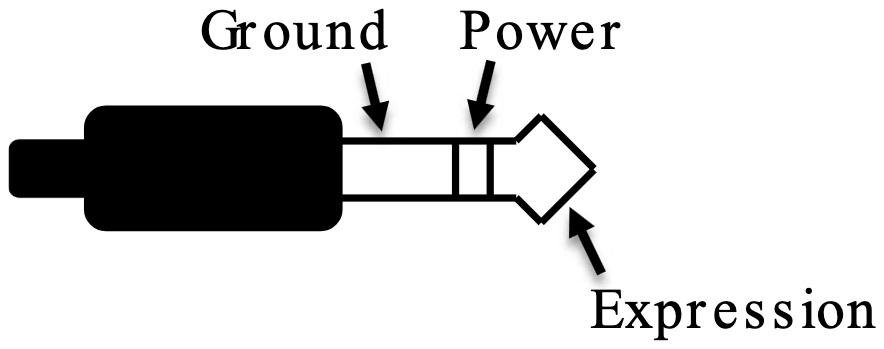
Please note, expression pedals with TS (Tip Sleeve) plugs will not work correctly with the expression input (PEDAL IN jack) of the Collider. Also, the resistance of the expression pedal is not critical. Pedal calibration is done automatically when a new external control mapping is created.
External Expression Controller (⅛”/3.5mm TRRS Connection – CONTROL INPUT jack)
The Source Audio Dual Expression Pedal can be directly connected to the CONTROL INPUT jack using a 3.5mm (⅛ inch), TRRS cable. In the case of an expression pedal with a TRRS plug, the tip connection is power, the first ring is the X-axis expression signal, the second ring is the Y-axis expression signal, and the sleeve connection is ground. In this configuration, the Collider uses the X expression signal as its expression source.
Third party expression pedals can be connected to the CONTROL INPUT as well, as long as they have a 3.5 mm (⅛”) TRS (Tip Ring Sleeve) plug with power on the tip, expression (the wiper of the potentiometer) on the ring, and ground on the sleeve, as seen in the diagram below.
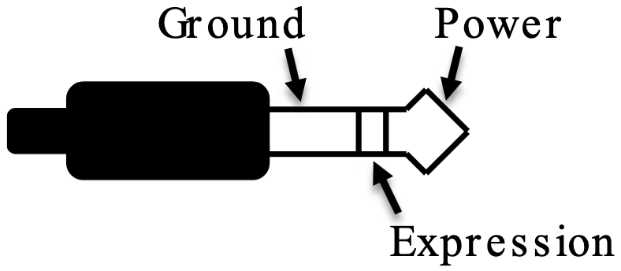
Expression pedals with TS (Tip Sleeve) plugs will not work correctly with the CONTROL INPUT of the Collider. For proper operation, the configuration steps in the next section must be followed when using any expression pedal, whether from a third party or from Source Audio.
Configuring the Expression Pedal
When the expression pedal is connected to the Collider, follow these simple steps to calibrate it and map it to control different effect parameters.
- Press the CONTROL INPUT button to enable external control mode. The CONTROL LED should be lit red.
- Press and hold the CONTROL INPUT button until the CONTROL LED begins to blink slowly (approximately one blink per second).
- Move the expression pedal over the range of motion you would like to use to control the Collider. If you would like to use the expression pedal’s full range of motion, make sure to move the pedal all the way from its minimum position to its maximum position. Note that you can create “dead zones,” if desired, by only moving the expression pedal over a limited region of its full range of motion.
- After setting the expression pedal range, click the DELAY/TAP footswitch once. The calibration is now complete, and the CONTROL LED will blink faster (about 2 blinks per second). Now, it is time to map the expression pedal to the effect parameters.
- Move the knobs you wish to control with the expression pedal to the minimum desired position and then click the DELAY/TAP footswitch. The CONTROL LED will now blink even faster (about 4 blinks per second). Note that you may control one or more knobs with the expression pedal, up to three total knobs.
- Move the knobs you wish to control with the expression pedal to the maximum desired position and then click the DELAY/TAP footswitch. The CONTROL LED will now be lit solid red.
- After setting the minimum and maximum knob positions, the parameter mapping is complete.
Note: The parameter range can be inverted by swapping the minimum and maximum position of the knobs during steps 5 and 6.
Note: To cancel a control assignment, press the CONTROL INPUT button at any time during the process above.
Once a mapping is created, it can be stored as part of a user preset. This way, each preset can be configured to have its own custom mapping.
External Control can be toggled on/off at any time by pressing the CONTROL INPUT button.
External Switch Used as Expression Input (Expression “Toggle”)
An external switch can also work as a sort of expression pedal that only has two positions: on and off. The external switch can be either momentary or latching.
External Switch as Expression Toggle (¼” TRS Connection – PEDAL IN Jack)
To use this mode, connect an external switch to PEDAL IN and set the PEDAL IN switch to the EXP position instead of the SWITCH position. The following plug configuration is required:
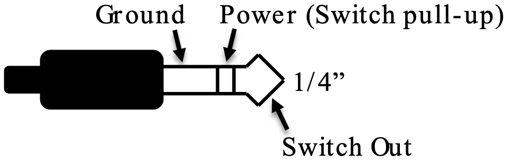
Follow these steps for configuration:
- Press the CONTROL INPUT button to enable external control. The CONTROL LED should be lit red.
- Press and hold the CONTROL INPUT button until the CONTROL LED begins to blink slowly (approximately one blink per second).
- Tap the external switch once.
- Click the DELAY/TAP footswitch once. The CONTROL LED will blink faster (about 2 blinks per second). Now, it is time to map the external switch to the effect parameters.
- Move the knobs you wish to control with the external footswitch to the minimum desired position and then click the DELAY/TAP footswitch. The CONTROL LED will now blink even faster (about 4 blinks per second). Note that you may control up to three knobs.
- Move the knobs you wish to control with the footswitch to the maximum desired position and then click the DELAY/TAP footswitch. The CONTROL LED will now be lit solid red.
- After setting the minimum and maximum knob positions, the parameter mapping is complete.
External Switch as Expression Toggle (⅛” (3.5mm) TRRS Connection – CONTROL INPUT Jack)
To use this mode, connect an external switch to CONTROL INPUT and set the PEDAL IN SWITCH to the SWITCH position instead of the EXP position. The following plug configuration is required:
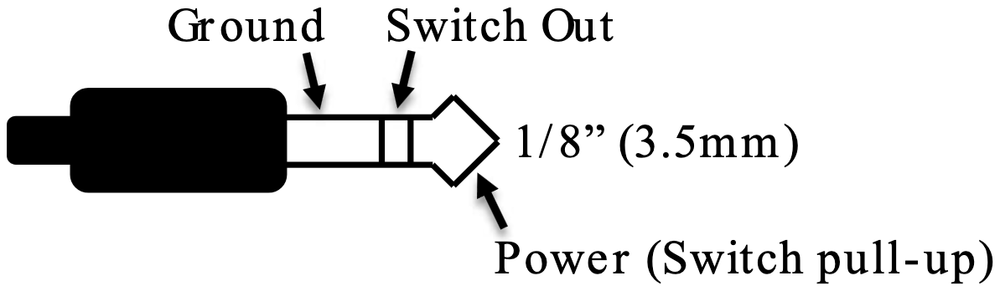
Follow these steps for configuration:
- Press the CONTROL INPUT BUTTON to enable external control. The CONTROL LED should be lit red.
- Press and hold the CONTROL INPUT BUTTON until the CONTROL LED begins to blink slowly (approximately one blink per second).
- Tap the external switch once.
- Click the DELAY/TAP footswitch once. The CONTROL LED will blink faster (about 2 blinks per second). Now, it is time to map the external switch to the effect parameters.
- Move the knobs you wish to control with the external footswitch to the minimum desired position and then click the DELAY/TAP footswitch. The CONTROL LED will now blink even faster (about 4 blinks per second). Note that you may control up to three knobs.
- Move the knobs you wish to control with the switch to the maximum desired position and then click the DELAY/TAP footswitch. The CONTROL LED will now be lit solid red.
- After setting the minimum and maximum knob positions, the parameter mapping is complete.
Hot Hand Input
The Hot Hand 3 Wireless Effects Controller can be connected directly to the CONTROL INPUT jack for wireless motion control of the Collider Delay+Reverb’s effect parameters. The Hot Hand has two axes of expression: X and Y. These signals are carried on the two rings of the TRRS cable that comes from the Hot Hand receiver. The Collider uses the X expression signal.
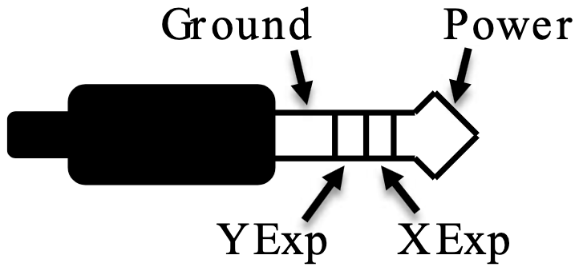
Configuring the Hot Hand
When the Hot Hand is connected to the Collider, follow these simple steps to calibrate it and map it to control different effect parameters.
- Press the CONTROL INPUT button to enable external control. The CONTROL LED should be lit red.
- Press and hold the CONTROL INPUT button until the CONTROL LED begins to blink slowly (approximately one blink per second).
- Move the Hot Hand ring over the range of motion you would like to use to control the Collider. The easiest way to do this is to move the ring in the same way that you intend to move it as you perform. The Collider will intelligently select the X or Y axis of the Hot Hand automatically, based on the motion of the ring.
- After setting Hot Hand range of motion, click the DELAY/TAP footswitch once. The calibration is now complete, and the CONTROL LED will blink faster (about 2 blinks per second). Now, it is time to map the Hot Hand to the effect parameters.
- Move the knobs you wish to control with the Hot Hand to their minimum desired position and then click the DELAY/TAP footswitch. The CONTROL LED will now blink even faster (about 4 blinks per second). Note that you may control up to three knobs.
- Move the knobs you wish to control with the Hot Hand to the maximum desired position and then click the DELAY/TAP footswitch. The CONTROL LED will now be lit solid red.
- After setting the minimum and maximum knob positions, the parameter mapping is complete.
Reset Expression Control Mapping
To clear the expression control mapping (Expression or Hot Hand), first press the CONTROL INPUT BUTTON to turn OFF control mode. The CONTROL LED should be off. Then, press and hold the CONTROL INPUT BUTTON until the CONTROL LED blinks 3 times. This clears all expression or Hot Hand mapping.
External Control Options Guide
The Collider Delay+Reverb Control Options Guide, reproduced below from its PDF, is a quick reference to all of the Collider’s external control options.
This is a quick reference guide for all of the Collider Delay+Reverb’s onboard (DELAY/TAP and REVERB) footswitches and external switch options. The Collider is compatible with most passive single (TS ¼” connection), dual (TRS ¼” connection), or the Source Audio Tap Tempo (⅛” TRRS and ¼” TRS connection) external footswitches.
| Function | DELAY/TAP Switch | REVERB Switch | PEDAL IN (Ext. ¼”) | CONTROL IN (Ext. ⅛”) | MIDI |
|---|---|---|---|---|---|
| Reverb Hold | N/A | Yes, Hold it (Engaged) | N/A | N/A | Yes |
| Delay Hold / Self Oscillation | N/A | Assignable (Engaged, Use “Unlock” Feature) | N/A | N/A | Yes |
| Delay Tap Tempo | Yes, Tap it (Engaged or Bypassed) | N/A | Assignable | Assignable | Yes |
| Preset Increment | N/A | Yes, Hold it (Bypassed) | Assignable | Assignable | Yes |
| Preset Decrement | Yes, Hold it (Bypassed) | N/A | Assignable | Assignable | Yes |
| Engine On/Off | Yes, Tap it | Yes, Tap it | N/A | N/A | Yes |
Please Note: Delay Hold / Self Oscillation is available by using the “unlock” feature and assigning a Delay engine to the Reverb side of the Collider.
Neuro Desktop and Mobile Editors
Like all pedals in the Source Audio One Series line, the Collider Delay+Reverb features access to more precise editing parameters, preset sharing, and added functionality via the Neuro Desktop Editor and Mobile App. The Neuro Desktop Editor is currently available as a free download for Apple and Windows on the Downloads page of the Source Audio website.
The Neuro Desktop Editor
The Neuro Desktop Editor is an excellent tool for creating and organizing highly customized presets for your Collider Delay+Reverb. The Desktop offers an advanced cataloging system for naming and storing Collider presets. The Desktop is also a tool for installing the latest updates to your Collider Delay+Reverb firmware.
Downloading and Connecting the Neuro Desktop Editor
The Neuro Desktop Editor is a free download for Mac and Windows PCs. To download the Neuro Desktop, go to the Source Audio Downloads page. In the Software tab select the appropriate file (you have a choice between the Mac and Windows versions) and download it. This file also includes all of the latest One Series Pedal Firmware files.
Please note that in order to use the Neuro Desktop Editor, you must create an account. This can only be done with the Neuro Mobile App.
After the download process, connect your Collider Delay+Reverb with a USB Type A male to mini Type B male cable (Warning: don’t use a charger cable). Connect the cable from the mini USB port on the pedal to the USB port on your computer. Once you’ve made the connection a blue box will appear in the Connections field indicating that the Collider is ready to be edited.
If a new Collider firmware update is available, the Firmware Update icon (the arrow icon) will be framed in yellow. When you click the arrow icon, you will be instructed on the updating procedure.
(Note: It is important to disconnect all other Source Audio pedals and turn off MIDI software during the firmware updating process.)
Neuro Desktop Editor User Interface
The Neuro Desktop’s user interface features three primary sections: Connections, Sound Editor, and Presets.
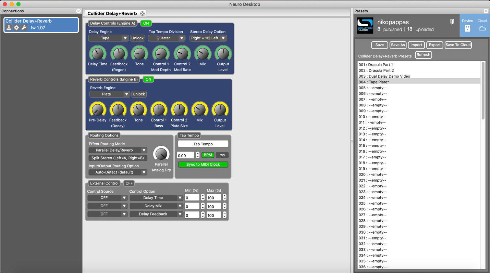
Connections
The Connections section is located on the left side of the Neuro Desktop Editor. This field displays all connected One Series pedals. Each connected pedal offers the three options listed below:
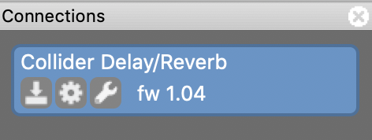
- Firmware Updates: The arrow icon checks for any recent firmware updates to the connected pedal. If an update is available this icon will be framed in yellow. To update your Collider, click on this icon and follow the update process.
- Hardware Option: The gear icon opens the Hardware Options window. Each Source Audio pedal has its own set of global hardware settings. The attached pedal will retain all hardware option edits until either the option is de-selected or a Factory Reset is performed.
- Open Editing Interface: The wrench icon opens the Collider Delay+Reverb’s Sound Editor, revealing a deep set of editing controls for creating custom presets.
Hardware Options
Clicking the gear icon in the Collider Delay+Reverb’s Connections window opens the Hardware Options menu (see the graphic below). Use the Hardware Options window to choose your pedal’s universal hardware settings.
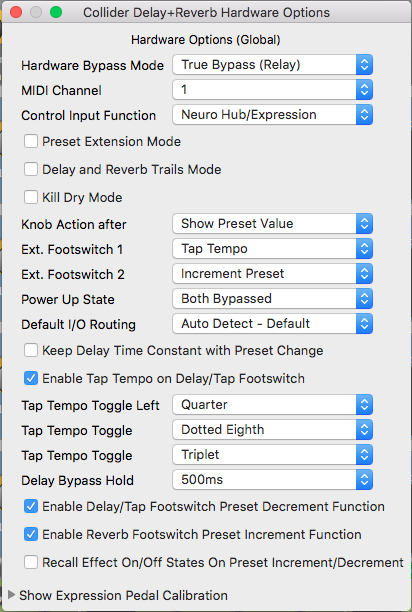
The Collider Delay+Reverb’s Hardware Options include the following:
- Hardware Bypass Mode: Selects between True or Buffered Bypass.
- MIDI Channel: Selects the pedal’s MIDI channel (1 through 16).
- Control Input: This dropdown menu assigns the control function of the external switch connected to the CONTROL INPUT. There are four choices: Neuro Hub/Expression, Increment Preset, Decrement Preset, and Tap Tempo.
- Preset Extension Mode: Adds an additional 4 user presets for a total of 8 presets accessible without MIDI messages.
- Delay/Reverb Trails Mode: Checking this box allows your delay or reverb trail to decay naturally upon bypassing the effect.
- Kill Dry Mode: Completely eliminates the dry signal from the pedal’s output. Kill Dry Mode is helpful when using the Collider in an effects send.
-
Knob Action after: Allows you to select the function of the knobs after a preset is
selected. There are three different options:
- Always Write – Knob positions will be recalled as exactly how they are set on the pedal
- Show Preset Value – This is the default mode. Discover where the knobs are set in each preset by rotating them. The Control LED will flash when each knob position has been discovered.
- Write After Preset Value is Reached – Rotating the knob will initially discover its position within the preset, but once it has been discovered, the Control LED will blink, and the knob will begin writing a new position.
- Ext. Footswitch: Plug a standard ¼” TRS, one or two button external footswitch to the Collider’s PEDAL IN jack and use it as an external Tap Tempo or to externally scroll through user presets. These two dropdown menus select the control assignments for each button on a two-button switch (use the top field only when connected to a single button switch). There are three choices: Tap Tempo, Increment Preset, and Decrement Preset.
- Power Up State: Selects between engaging or bypassing the effect upon the initial power up of the pedal. You may also decide to engage one effect by default, and bypass the other.
- Default I/O: Sets the default I/O signal routing mode. Descriptions of the available routing modes are available in the Stereo Operation & Signal Routing section of this manual.
- Keep Delay Time Constant with Preset Change: Does exactly what it says – change presets without changing the time of the delay.
- Enable Tap Tempo on DELAY/TAP Footswitch: Check or uncheck this box to turn off or enable the DELAY/TAP footswitch’s Tap Tempo functionality.
- Tap Tempo Toggle Left: Select between different beat divisions to map to the left position of the tap tempo switch.
- Tap Tempo (Toggle Center): Select between different beat divisions to map to the center position of the tap tempo switch.
- Tap Tempo Toggle Right: Select between different beat divisions to map to the right position of the tap tempo switch.
- Delay Bypass Hold: This dropdown menu allows you to extend the amount of time required when holding down the DELAY/TAP footswitch to bypass the delay effect. Extending the Delay Bypass Hold time also affects the action of the tap tempo and makes the pedal less likely to bypass while tapping in a tempo.
- Enable DELAY/TAP Footswitch Preset Decrement Function: Check or uncheck this box to turn off or enable the DELAY/TAP footswitch’s ability to scroll through presets.
- Enable REVERB Footswitch Preset Increment Function: Check or uncheck this box to turn off or enable the REVERB footswitch’s ability to scroll through presets.
- Recall Effect On/Off States on Preset Increment/Decrement: Checking this box allows you to include the On/Off states of both the Delay and Reverb effects when scrolling through presets.
- Pedal Input & Control Input Calibration (Accessible via the Show Expression Pedal Calibration dropdown controls): In the vast majority of cases, it is not necessary to change any of these values. However, in rare cases certain expression pedals require a custom range. When using a non-standard expression pedal, check its user manual for the specific calibration range.
Sound Editor
Upon clicking the wrench icon in the Connections section, the Collider Delay+Reverb’s Sound Editor interface appears in a tab in the center field. This is where all of the sound editing work takes place.
The Sound Editor is broken into several sub-sections, each containing a unique variation of virtual knobs and dropdown menus. The following is a brief explanation of each Sound Editor sub-section.
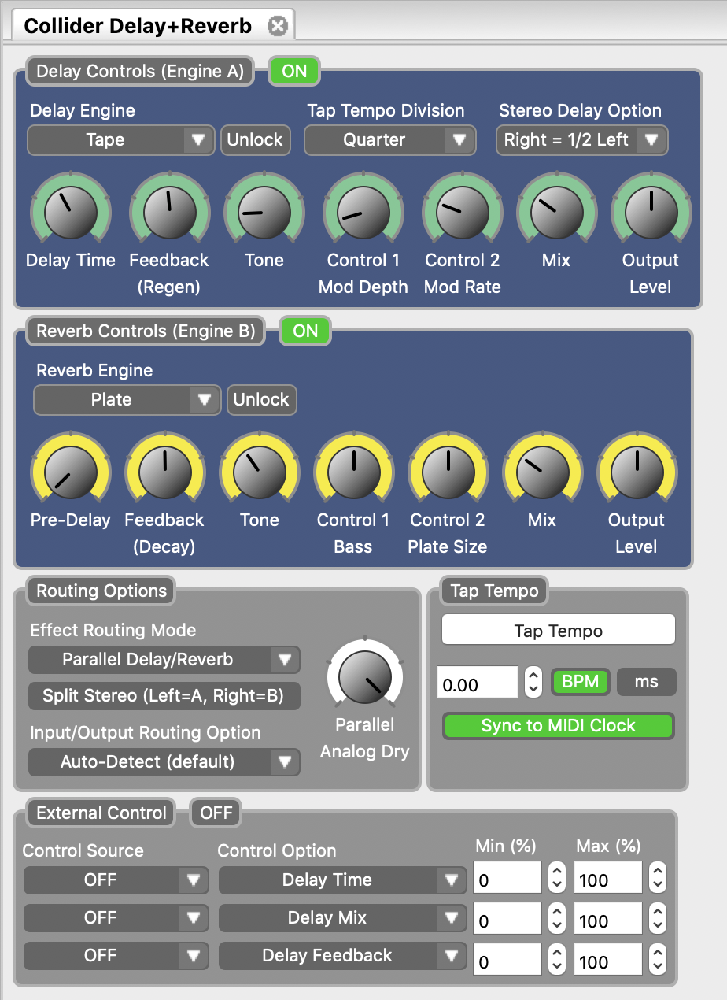
Delay Controls (Engine A)
This block contains a comprehensive collection of editing tools for the Delay engine. The block contains the following controls:
- Enable Status: This green button labeled ON or OFF indicates whether Delay is engaged or bypassed.
- Delay Engine: Select the Delay engine.
- Unlock: This button allows you to “unlock” the Delay side of the pedal and access Reverb engines.
- Primary Engine Controls: There are 7 primary control knobs for customizing each delay preset. Among this set of virtual knobs are controls like DELAY TIME and FEEDBACK, which are also found on the face of the Collider Delay+Reverb.
- Tap Tempo Division: Select between 6 different beat divisions for the TAP footswitch including Quarter note, Dotted Eighth, and the Golden Ratio.
- Stereo Delay Option: Select between 4 different delay patterns when using the Collider in stereo, including the classic “Ping-Pong” stereo delay effect.
Reverb Controls (Engine B)
This block contains a comprehensive collection of editing tools for the Reverb engine. The block contains the following controls:
- Enable Status: This green button labeled ON or OFF indicates whether Reverb is engaged or bypassed.
- Reverb Engine: Select the reverb engine.
- Unlock: This button allows you to “unlock” the Reverb side of the pedal and access Delay engines.
- Primary Engine Controls: There are 7 primary control knobs for customizing each reverb preset. Among this set of virtual knobs are controls like PRE-DELAY and FEEDBACK (DECAY), which are also found on the face of the Collider Delay+Reverb.
Routing Options
Select the routing configurations of Inputs and Outputs 1 & 2. See the Stereo Operation & Signal Routing section for a detailed explanation of each routing option.
Parallel Analog Dry
This knob controls the level of your dry signal (or ADT level) while in Parallel Mode. 100% on this knob is unity level, while 0% on the knob is no dry signal at all.
Tap Tempo
This section allows you to manually enter a tempo for your Delay repeats. You may type in a BPM (beats per minute) or ms (milli-seconds) numerically or use your cursor to “tap” the button at your desired tempo. Also in this section is the option to Sync to MIDI Clock.
External Control
Control up to three parameters with an external expression pedal or a Hot Hand 3 Universal Wireless Expression Controller. Use the dropdown menus in the External Control block to select the expression device (Control Source) and controlled parameter (Control Option). Use the Min and Max fields to set the depth of the expression sweep.
Presets
The Presets section is located on the right side of the Neuro Desktop interface. The Presets section is comprised of two different tabs: Device and Cloud. Open either tab by clicking on the blue icons in the top right corner.
Device Tab
In the Device tab you will find a list of all the presets and empty preset positions available in your Collider. The Presets section is also where you Save, Import, and Export presets. The buttons located at the top of the Presets field perform the functions listed below:
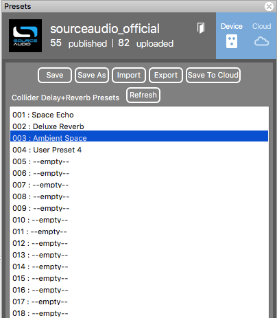
- Save Button: If you have made edits to a pre-existing preset, use the Save button to update the preset without changing its name or preset position.
- Save As Button: After creating a new preset hit the Save As button and you will be prompted to name it and select the preset or Effect Selector position to which it will be saved.
- Import Button: Use the Import button to upload saved .pre files to your Collider and Neuro Desktop Editor. Upon clicking the Import button, you will be asked to find the .pre file. Simply go to your Neuro presets folder, select file, and upload.
- Export Button: Use the Export button to save a preset on your computer or share it with other musicians. Presets are saved as .pre files and stored anywhere on your computer (we recommend creating a dedicated folder to store your presets). After creating a preset, hit the Export button - a window will pop up, asking you to name, tag, and select a location for the preset. After the preset is saved, the .pre file can be shared via email or any common file sharing method.
- Save To Cloud Button: Publishes a preset to the Cloud. Saving a preset to the Cloud (a.k.a. the “Neuro Community”) makes it available to anybody who owns a Collider Delay+Reverb.
- Refresh Button: Hit the Refresh button to restore the Neuro Desktop edits to the state immediately after your last save procedure.
- Hardware Presets: This is where all of your pedal presets are listed. Use the Save As button to select where you would like to store an edited preset - you can choose from any of the 128 preset positions on the Collider Delay+Reverb.
Cloud Tab
The Cloud is the portal to your personal preset library, Source Audio created presets, as well as the entire catalog of user created Community Presets. The Cloud tab is broken into four different sub-tabs: Community, Factory, My Library, My Published.
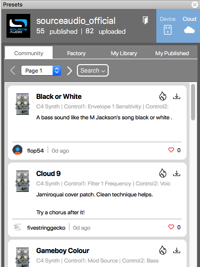
- Community: Contains all of the user presets created and published by the entire Neuro Community. Use the Search button to help narrow your search for specific presets.
- Factory: Contains presets created by the Source Audio staff for One Series pedals.
- My Library: Where all of the presets that you have created and saved will reside.
- My Published: Stores all of the presets that you have created and published to the Neuro Community tab.
The Neuro Mobile App
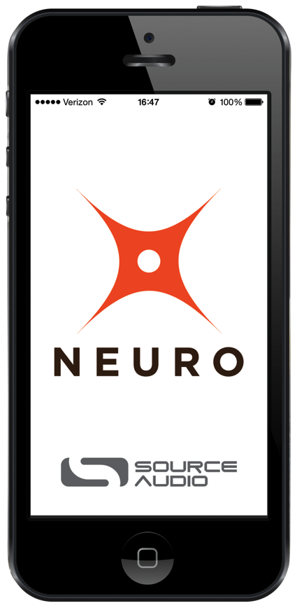
The Neuro Desktop Editor is also available in a mobile version for iPhone or Android. Visit Google Play or the App Store and search for “Source Audio Neuro.” The Neuro Mobile App is a free download and contains all the editing and preset capabilities of the desktop version.
Neuro Hub
The Source Audio Neuro Hub (sold separately) unites Source Audio pedals from the Soundblox 2 and One Series families to create a single, stage-ready effects system. It features shared MIDI, passive expression pedal input, Hot Hand connectivity, and USB, and can connect up to five Source Audio pedals. The Neuro Hub features a powerful scene saving functionality, which allows you to create up to 128 multi-pedal presets known as scenes, each recallable via MIDI program change messages. Connect the Neuro Hub to your computer via USB for updates, saving and editing multi-pedal presets, and more. To connect the Collider to the Neuro Hub, use a 3.5 mm TRRS cable and make a connection between the Collider’s CONTROL INPUT jack and any of the Neuro Hub’s multi-function outputs. For more information, refer to the Neuro Hub documentation on the Source Audio website.
MIDI
Source Audio’s MIDI Support chart lists the Collider with Full Direct support: PC & CC messages need no MIDI adapter, and it takes Neuro Hub scenes & CC messages, USB-MIDI CC and PC messages and direct MIDI I/O, with 128 presets.
Using the MIDI IN jack (5-pin DIN) or a USB connection, the Collider can be controlled by generic MIDI Continuous Controller (CC) and Program Change (PC) messages. All of the Collider’s adjustable parameters are directly accessible via MIDI continuous controller messages.
MIDI Channel
By default, the Collider responds to MIDI Channel 1. The Collider ignores all MIDI messages sent to it that are not on its channel. The input MIDI channel for the Collider can be changed in the Hardware Options menu of the Neuro Editors. Note that the MIDI Input Channel is a global setting that is NOT saved per preset. Note that some manufacturers begin counting MIDI channels at zero (from 0 to 15), while the Source Audio Neuro Editors use the convention of counting from 1 to 16.
Selecting Presets via Program Change (PC) Messages
The 128 user presets on the Collider can be recalled via program change messages. Presets 1 to 128 are mapped to MIDI Program Change messages 1 to 128.
It is possible to save presets with the Collider bypassed. This means a preset can be recalled without actually engaging one or both of the effects. The effect can then be engaged either by pressing the footswitches or by sending the proper MIDI Continuous Control message.
Many of the parameters in the Collider can be controlled via MIDI. For more details, see MIDI Implementation.
Controlling the Collider with MIDI Continuous Controller (CC) Messages
The Collider responds to MIDI Continuous Controller (CC) messages. The pedal comes already mapped to a default set of CC numbers. For a complete list of default MIDI mappings and ranges, see the MIDI Implementation table below.
Custom CC Mapping
The default MIDI map provides control over parameters using specific Continuous Controller messages. It is also possible to override the default map and create custom mapping. Custom MIDI CC mappings are global, meaning they are not unique per preset. The CC mapping will apply in all situations, regardless of which preset is active.
To create a custom MIDI CC mapping, follow these steps:
- Connect your Collider to the Neuro Desktop Editor.
- In the top bar menu select Device then Edit Device MIDI Map from the dropdown menu.
- The Collider Delay+Reverb MIDI Map Editor window will open. Simply scroll to the MIDI CC value you wish to remap and click that CC’s dropdown menu. A list of parameter choices will unfold.
- Select the parameter you wish to re-assign to the chosen CC. The process is complete.
MIDI Implementation
The MIDI Parameter Details table from the Collider Delay+Reverb MIDI Implementation Guide.
| Parameter | CC# | Range | Value | Description |
|---|---|---|---|---|
| Delay (A) Engine | 1 | 0-11 | Selects and loads Delay (& Reverb) engines into A | |
| 0 | Digital | |||
| 1 | Analog | |||
| 2 | Tape | |||
| 3 | Reverse | |||
| 4 | Oil Can | |||
| 5 | Room | |||
| 6 | Hall | |||
| 7 | True Spring | |||
| 8 | Plate | |||
| 9 | Shimmer | |||
| 10 | E-Dome | |||
| 11 | Swell | |||
| Delay (A) Time | 2 | 0-127 | Sets min and max delay times | |
| Delay (A) Mix | 3 | 0-127 | Sets the wet/dry mix - 50/50 point at approx. 95 | |
| Delay (A) Feedback | 4 | 0-127 | Sets Delay Regeneration amount | |
| Delay (A) Tone | 5 | 0-127 | Sets the brightness of the wet signal | |
| Delay (A) Control 1 | 6 | 0-127 | Sets whichever parameter is assigned to CONTROL 1 | |
| Delay (A) Control 2 | 7 | 0-127 | Sets whichever parameter is assigned to CONTROL 2 | |
| Delay (A) Output | 8 | 0-127 | Sets the level of the wet signal | |
| Delay Tap Tempo Division | 9 | 0-5 | Selects the tap tempo beat division | |
| 0 | Quarter | |||
| 1 | Dotted Eighth | |||
| 2 | Golden Ratio | |||
| 3 | Eighth | |||
| 4 | Triplet | |||
| 5 | Sixteenth | |||
| Delay (A) Stereo Division | 24 | 0-5 | Sets the stereo division ratio | |
| Reverb (B) Engine | 15 | 0-11 | Selects and loads Reverb (& Delay) engines into B | |
| 0 | Digital | |||
| 1 | Analog | |||
| 2 | Tape | |||
| 3 | Reverse | |||
| 4 | Oil Can | |||
| 5 | Room | |||
| 6 | Hall | |||
| 7 | True Spring | |||
| 8 | Plate | |||
| 9 | Shimmer | |||
| 10 | E-Dome | |||
| 11 | Swell | |||
| Reverb (B) Time | 16 | 0-127 | Sets Pre Delay of the Reverb | |
| Reverb (B) Mix | 17 | 0-127 | Sets the wet/dry mix - 50/50 point at approx. 95 | |
| Reverb (B) Feedback | 18 | 0-127 | Sets the decay rate of the Reverb | |
| Reverb (B) Tone | 19 | 0-127 | Sets the brightness of the wet signal | |
| Reverb (B) Control 1 | 20 | 0-127 | Sets whichever parameter is assigned to CONTROL 1 | |
| Reverb (B) Control 2 | 21 | 0-127 | Sets whichever parameter is assigned to CONTROL 2 | |
| Reverb (B) Output | 22 | 0-127 | Sets the level of the wet signal | |
| Reverb (B) Tap Tempo Division | 23 | 0-5 | Selects the tap tempo beat division | |
| 0 | Quarter | |||
| 1 | Dotted Eighth | |||
| 2 | Golden Ratio | |||
| 3 | Eighth | |||
| 4 | Triplet | |||
| 5 | Sixteenth | |||
| Reverb (B) Stereo Division | 24 | 0-5 | Sets the stereo division ratio | |
| Preset Decrement | 80 | any | ||
| Preset Increment | 82 | any | ||
| Remote Tap Function | 93 | any | Same as tapping the DELAY/TAP footswitch | |
| Remote Hold Function | 97 | any | Same as pressing the REVERB footswitch | |
| Remote Expression | 100 | 0-127 | Overrides all expression inputs | |
| Delay (A) Bypass/Engage | 101 | 0-127 | 0-64 Bypass, 65-127 Engage | |
| Toggle Delay (A) Bypass/Engage | 102 | any | ||
| Reverb (B) Bypass/Engage | 103 | 0-127 | 0-64 Bypass, 65-127 Engage | |
| Toggle Reverb (B) Bypass/Engage | 104 | any | ||
| Recall Preset Both Bypassed | 105 | 0-127 | Recalls any preset with Delay (A) & Reverb (B) Bypassed | |
| Recall Preset Delay Engaged | 106 | 0-127 | Recalls any preset with Delay (A) Engaged | |
| Recall Preset Both Engaged | 107 | 0-127 | Recalls any preset with Delay (A) & Reverb (B) Engaged | |
| Recall Preset Reverb Engaged | 108 | 0-127 | Recalls any preset with Reverb (B) Engaged |
USB
The Collider’s USB port is plug-and-play ready for Windows and Mac computers. The Collider uses class-compliant drivers, so no special drivers are needed. Just power up the Collider and connect it to the computer using a USB cable. The computer will automatically recognize the Collider, which will be identified as “One Series Collider Delay+Reverb” in the operating system.
USB connectivity brings many benefits, such as the ability to connect with the Neuro Desktop Editor for downloading Collider firmware updates, accessing an advanced set of effect editing parameters, and downloading alternate reverb engines. The USB port also provides MIDI connectivity to audio production software.
USB-MIDI
The Collider will appear as a MIDI device in your computer’s operating system. As a result, the Collider can communicate with audio production software that utilizes MIDI, such as Pro Tools, Ableton Live, Logic Pro, and more. MIDI messages can be sent directly to the Collider using the USB connection, which allows for full automation of the Collider within host software such as a DAW. For example, the amount of Delay Feedback can be automated by outputting MIDI continuous controller messages from the host software to the Collider via the USB connection. For more details, see MIDI Implementation.
Specifications
Dimensions
- Length: 11.63 cm (4.58 inches)
- Width: 11.17 cm (4.40 inches)
- Height (not including knobs and footswitches): 3.71 cm (1.46 inches)
- Height (including knobs and footswitches): 5.61 cm (2.21 inches)
Weight
- 450 grams (1 pound)
Power
- 300mA @ 9V DC
- Center negative, Barrel positive plug, 2.1 mm inner diameter, 5.5 mm outer diameter
Audio Performance
- Maximum Input Level: +6.54 dBV = 8.76 dBu = 2.12 V RMS = 6.0 V p-p
- Full Scale Output Level: +6.54 dBV = 8.76 dBu = 2.12 V RMS = 6.0 V p-p
- Input Impedance: 1 Mega Ohm (1 MΩ)
- Output Impedance: 600 Ohm (600 Ω)
- 110 dB DNR Audio Path
- 24-bit Audio Conversion
- 56-bit Digital Data Path
- Universal Bypass (relay-based true bypass and analog buffered bypass)
Troubleshooting
Restore Factory Settings
In order to revert the Collider to its factory settings, clearing all user data, presets, expression mappings and custom effect engines, use either the Neuro Mobile App or Neuro Desktop Editor and choose the Factory Reset option in the Hardware Options menus. It is also possible to perform a factory reset without the Neuro App by following these steps:
- Press and hold the REVERB FOOTSWITCH.
- Connect the power supply.
- The CONTROL LED will blink rapidly until the reset is complete. You can stop holding the REVERB FOOTSWITCH once the CONTROL LED starts to blink.
Noise
Power source: Ensure that the proper power supply is being used.
Near noise source: Move pedal away from power supplies and other equipment.
Other equipment: Remove other effects from signal chain; see if noise persists.
Bad cables: Swap out audio cables.
USB ground loop: When connected to a computer using a USB cable, noise can appear in the audio signal. This usually results from ground loop noise due to the Collider and computer running on separate power supplies. In the case of laptops, disconnecting the computer’s power supply and running it on a battery can often mitigate the noise. External display monitors are often the primary source of noise, and powering down monitors can also resolve noise issues.
Ground loop with amp: Make sure your Collider is running on the same power mains circuit as your guitar amplifier.
Hot Hand Doesn’t Work
Low power: Ensure that the proper power supply is being used.
Not calibrated properly: Calibrate the Hot Hand. See the Hot Hand Input section for more details.
Not connected properly: Check Hot Hand connections.
Unit Appears Dead / No LEDs Lit
Wrong power supply: Use correct power supply. See the DC 9V (Power) section for more details.
Frequently Asked Questions
What kind of instruments can I connect to the Collider’s inputs?
The Collider’s audio inputs are high impedance (~ 1 MΩ) and they can accept high impedance signal sources like guitars/basses with passive pickups, as well as low impedance sources like line-level audio circuits, guitars/basses with active pickups, electronic keyboards, or mixer outputs. The input circuit can handle signals ranging up to 6.0 Volts, peak-to-peak.
Can I power the Collider directly over USB, without using the 9 Volt supply?
No. USB provides 5 Volts, but the Collider needs 9 Volts, so the Collider cannot be powered directly from USB.
When connecting the Collider to a recording interface or mixer, should I use a Lo-Z (microphone) or Hi-Z (line / instrument) input?
The Collider’s output will be low impedance when the effect is active or in buffered bypass mode, but it will be high impedance when using true bypass mode and a guitar with passive pickups. Therefore, it is recommended that you use a high impedance (Hi-Z) input on your recording interface or mixer to avoid signal loss.
Why doesn’t the Collider respond to MIDI messages being sent to it?
By default, the Collider should respond to MIDI continuous controller messages on channel 1. The Collider’s MIDI channel can be configured using the Neuro Editors. Channel numbers in MIDI use zero-based counting, so MIDI channel 1 is described as 0 in hexadecimal, MIDI channel 2 is described as 1 in hexadecimal, and so on, concluding with MIDI channel 16, which is described as F in hexadecimal. A continuous controller message starts with a hexadecimal B and is followed by the channel number (0 through F).
So, the command byte from your MIDI controller should be formatted as shown in the following table:
| MIDI Channel (Decimal) | CC Command Byte (Hex) |
|---|---|
| 1 | B0 |
| 2 | B1 |
| 3 | B2 |
| 4 | B3 |
| 5 | B4 |
| 6 | B5 |
| 7 | B6 |
| 8 | B7 |
| 9 | B8 |
| 10 | B9 |
| 11 | BA |
| 12 | BB |
| 13 | BC |
| 14 | BD |
| 15 | BE |
| 16 | BF |
Each continuous controller command byte is followed by two bytes, the CC number and the value. So, each CC message consists of a total of three bytes. If the Collider is not responding to MIDI, make sure that your MIDI controller is properly configured and sending messages in the format described above.
Can I use the Collider in my amp’s effects loop?
The Collider’s audio inputs can handle up to 8.76 dBu or 6.0 Volts peak-to-peak, which allows it to work in most amp effects loops. Be sure to check your amp’s documentation to verify that the maximum send level is less than the Collider’s maximum input level.
How do I update the firmware?
Firmware updates are available via the Neuro Desktop Editor using the USB port. Power the pedal and connect it to your computer using a mini USB cable. The Neuro Desktop Editor is available from Source Audio’s website: http://www.sourceaudio.net/support/downloads. While the pedal is connected, select the Arrow Icon located in the Collider Delay+Reverb square in the Connections field.
Mac Gatekeeper
Mac users may see this warning message when trying to open the updater software: “App can’t be opened because it was not downloaded from the Mac App Store.” In order to run the updater, please refer to the steps in this Apple support article: https://support.apple.com/en-us/HT202491.
Rubber Feet
The Collider comes standard with a flat aluminum bottom, making it easy to apply Velcro and mount to a pedalboard. Additionally, adhesive rubber feet are included in the Collider box. Applying the rubber feet to the Collider can help prevent it from sliding on flat surfaces such as a hardwood floor.
Waste Disposal Notes
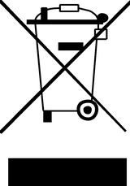
If possible, dispose of the device at an electronics recycling center. Do not dispose of the device with the household waste.
For full compliance with EN 61000-4-6 standard, input cable must be less than 3 meters in length.
Warranty
Limited Transferrable Warranty
Source Audio, LLC (hereinafter “Source Audio”) warrants that your new Source Audio One Series Collider Delay+Reverb, when purchased at an authorized Source Audio dealer in the United States of America (“USA”), shall be free from defects in materials and workmanship under normal use for a period of two (2) years from the date of purchase by the original purchaser. Please contact your dealer for information on warranty and service outside of the USA.
Under this Limited Warranty, Source Audio’s sole obligation and the purchaser’s sole remedy shall be repair, replacement, or upgrade, at Source Audio’s sole discretion, of any product that, if properly used and maintained, proves to be defective upon inspection by Source Audio. Source Audio reserves the right to update any unit returned for repair and to change or improve the design of the product at any time without notice. Source Audio reserves the right to use reconditioned parts and assemblies as warranty replacements for authorized repairs. Any product repaired, replaced, or upgraded pursuant to this Limited Warranty will be warranted for the remainder of the original warranty period.
This Limited Warranty is extended to the original retail purchaser. This Limited Warranty can be transferred to anyone who may subsequently purchase this product provided that such transfer is made within the applicable warranty period and Source Audio is provided with all of the following information: (i) all warranty registration information (as set forth on the registration card) for the new owner, (ii) proof of the transfer, within thirty (30) days of the transfer, and (iii) a photocopy of the original sales receipt. Warranty coverage shall be determined by Source Audio in its sole discretion. This is your sole warranty. Source Audio does not authorize any third party, including any dealer or sales representatives, to assume any liability on behalf of Source Audio or to make any warranty on behalf of Source Audio.
Warranty Information
Source Audio may, at its option, require proof of the original purchase date in the form of a dated copy of the original authorized dealer’s invoice or sales receipt. Service and repairs of Source Audio products are to be performed only at the Source Audio factory or a Source Audio authorized service center. Prior to service or repair under this Limited Warranty, the purchaser must request from Source Audio a return authorization, which is available at:
Source Audio LLC
120 Cummings Park, Woburn, MA 01801
(781) 932-8080 or at www.sourceaudio.net
Unauthorized service, repair, or modification will void this Limited Warranty.
Disclaimer and Limitation of Warranty
Do not open the effects pedal under any circumstance. This will void the warranty.
The foregoing limited warranty is the only warranty given by Source Audio and is in lieu of all other warranties. All implied warranties, including warranties of merchantability and fitness for any particular purpose, exceeding the specific provisions of this limited warranty, are hereby disclaimed and excluded from this limited warranty. Upon expiration of the applicable express warranty period, Source Audio shall have no further warranty obligation of any kind, express or implied. Source Audio shall in no event be liable for any special, incidental, or consequential damages suffered by the purchaser or any third party, including without limitation, damages for loss of profits or business or damages resulting from use or performance of the product, whether in contract or in tort. Source Audio shall not be liable for any expenses, claims, or suits arising out of or relating to any of the foregoing. Some states do not allow the exclusion or limitation of implied warranties so some of the above limitations and exclusions may not apply to you. This Limited Warranty gives you specific legal rights, and you may also have other rights, which vary, from state to state. This Limited Warranty only applies to products sold and used in the USA. Source Audio shall not be liable for damages or loss resulting from the negligent or intentional acts of the shipper or its contracted affiliates. You should contact the shipper for proper claims procedures in the event of damage or loss resulting from shipment.
Version History
October 8, 2019: Initial Release
November 14, 2019: Includes additional Hardware Options
December 27, 2019: Includes an additional Hardware Shortcut
Quick Start Reference Card
The one-page Quick Start Reference Card that ships with the pedal.
POWER: Power your Collider with the included power supply. If using a pedalboard power supply, be sure to use a regulated 9 Volt DC output that can source at least 300mA.
CONTROLS:
TIME - Adjusts delay time for the delays and pre-delay for the reverbs.
MIX - Adjusts the ratio between the wet and dry signals. 50/50 wet/dry is at 3 o’clock.
FEEDBACK - Adjusts regeneration amount for the delays and decay time for the reverbs.
TONE and CONTROL 1 & 2 - Varies depending on the selected engine (see table below).
TAP Toggle - Selects a Tap Tempo beat division for the delay engines.
KNOBS Toggle - Selects whether the knobs control delay or reverb parameters. LOCK position prevents accidentally bumped knobs from changing the settings.
DELAY/TAP Switch - Engage/bypass delay engines & Tap Tempo. While engaged, quick presses on the footswitch will be used for tap tempo, a slightly longer press will bypass the delay.
REVERB Switch - Engage/bypass reverb engines. Press + hold to freeze/hold reverb tail.
TRAILS MODE - Press + hold CONTROL INPUT then press DELAY/TAP to toggle on/off.
SELECT/SAVE Button - Press to scroll through presets. Press + hold to save a preset.
PRESET SCROLLING - When bypassed, press + hold DELAY or REVERB footswitches to scroll down or up through presets, respectively.
DISCOVER THE KNOB POSITION OF AN ACTIVE PRESET - The activity LED will blink twice to indicate when the knob position matches the saved preset position. This feature can be modified in the Hardware Options to other styles of preset knob behavior.
| Delay/Reverb Engine | TONE | CONTROL 1 Knob | CONTROL 2 Knob |
|---|---|---|---|
| Digital Delay | Dark/Bright | Modulation Depth | Modulation Rate |
| Analog Delay | Dark/Bright | Modulation Depth | Modulation Rate |
| Tape Delay | Dark/Bright | Modulation Depth | Modulation Rate |
| Reverse Delay | # of Voices | Modulation Depth | Modulation Rate |
| Oil Can Delay | Dark/Bright | Modulation Depth | Modulation Rate |
| Room Reverb | Treble | Bass | Modulation Depth |
| Hall Reverb | Treble | Bass | Hall Size (5) |
| True Spring Reverb | Treble | Bass | Spring Length (3) |
| Plate Reverb | Treble | Bass | Plate Size (3) |
| Shimmer Reverb | Treble | Shimmer Crossfade | Regeneration |
| E-Dome Reverb | Treble | Bass | Modulation Depth |
| Swell Reverb | Treble | Swell Sensitivity | Swell Time |
USERS GUIDE – NEURO EDITOR – NEURO MOBILE – SUPPORT
www.sourceaudio.net
©Source Audio LLC | 120 Cummings Park, Woburn, MA 01801 | www.sourceaudio.net